<!doctype html>
<html lang="en">
<head>
  <meta charset="utf-8">
  <meta name="viewport" content="width=device-width, initial-scale=1">
  <title>arxiv digest — 2026-09-22</title>
  <style>
:root {
  --bg: #ffffff;
  --fg: #1f2328;
  --muted: #59636e;
  --border: #d0d7de;
  --card: #f6f8fa;
  --link: #0969da;
}
body {
  max-width: 980px;
  margin: 0 auto;
  padding: 2rem 1rem 5rem;
  font-family: -apple-system, BlinkMacSystemFont, "Segoe UI", Helvetica, Arial, sans-serif;
  line-height: 1.55;
  color: var(--fg);
  background: var(--bg);
}
a { color: var(--link); }
img { max-width: 100%; height: auto; }
pre, code { background: var(--card); border-radius: 6px; }
pre { padding: 1rem; overflow-x: auto; }
blockquote { border-left: 4px solid var(--border); padding-left: 1rem; color: var(--muted); }
details { margin: 0.6rem 0; }
summary { cursor: pointer; font-weight: 600; }
.paper-figures-scroll {
  display: flex;
  gap: 1rem;
  overflow-x: auto;
  overscroll-behavior-x: contain;
  padding: 0.75rem 0.25rem 1rem;
  margin: 1rem 0 1.25rem;
  border-top: 1px solid var(--border);
  border-bottom: 1px solid var(--border);
  scroll-snap-type: x proximity;
}
.paper-figure-card {
  flex: 0 0 min(260px, 72vw);
  scroll-snap-align: start;
  background: var(--card);
  border: 1px solid var(--border);
  border-radius: 12px;
  padding: 0.55rem;
}
.paper-figure-card img {
  display: block;
  width: 100%;
  max-height: 240px;
  object-fit: contain;
  background: white;
  border-radius: 8px;
}
.paper-figure-caption {
  display: block;
  margin-top: 0.5rem;
  color: var(--muted);
  font-size: 0.85rem;
}
.figure-strip-hint {
  color: var(--muted);
  font-size: 0.9rem;
  margin-bottom: -0.3rem;
}
</style>
  <!-- MathJax: renders $...$ inline math and $$...$$ display math, plus
       \(...\) and \[...\]. Loaded from the official CDN; works offline
       once cached. Configured to skip code/pre blocks so arxiv IDs that
       look like dollar amounts don't get mangled. -->
  <script>
    window.MathJax = {
      tex: {
        inlineMath: [['$', '$'], ['\\(', '\\)']],
        displayMath: [['$$', '$$'], ['\\[', '\\]']],
        processEscapes: true,
        processEnvironments: true
      },
      options: {
        skipHtmlTags: ['script', 'noscript', 'style', 'textarea', 'pre', 'code'],
        ignoreHtmlClass: 'tex2jax_ignore',
        processHtmlClass: 'tex2jax_process'
      }
    };
  </script>
  <script id="MathJax-script" async
    src="https://cdn.jsdelivr.net/npm/mathjax@3/es5/tex-chtml.js"></script>
</head>
<body>
<header style="background-color: #333; color: white; padding: 15px; margin-bottom: 20px;">
  <h1 style="margin: 0; font-size: 24px;">
    <a href="https://ochelpan.github.io/arXiv_clean/" style="color: white; text-decoration: none;">Main</a>
  </h1>
</header>

<h1>Daily arXiv Report</h1>

<hr>
<p>
<a href="index.html">← Index</a>
 · <a href="papers_02.html">Next →</a>
</p>
<hr>

<h2>Papers 1–20</h2>
<p><a id="paper-2609.20966"></a></p>
<h3 id="robust-many-body-quantum-batteries"><a href="http://arxiv.org/abs/2609.20966v1">Robust many-body quantum batteries</a></h3>
<p><strong>Authors:</strong> Finn Schmolke, Karen Hovhannisyan, Milton Aguilar<br>
<strong>Type:</strong> theory · <strong>Category:</strong> statistical mechanics · <strong>PDF:</strong> <a href="https://arxiv.org/pdf/2609.20966v1">https://arxiv.org/pdf/2609.20966v1</a><br>
<strong>Analysis basis:</strong> full PDF text, analyzed in chunks
<strong>Topic relevance:</strong> 🔥 <code>quantum measurements</code> <strong>4/5</strong> · 🔥 <code>scars &amp; prethermalization</code> <strong>4/5</strong> · <code>driven-dissipative phase transition</code> <strong>3/5</strong> · <code>methods for driven-dissipative</code> <strong>3/5</strong> · <code>non-equilibrium universality</code> <strong>3/5</strong> · <code>analog quantum simulation</code> <strong>2/5</strong> · <code>Keldysh / 2PI / non-Gaussian methods</code> <strong>1/5</strong> · <code>correlated / nonlocal dissipation</code> <strong>1/5</strong></p>
<div class="figure-strip-hint">↔ Scroll figures horizontally</div>
<div class="paper-figures-scroll">
<figure class="paper-figure-card">
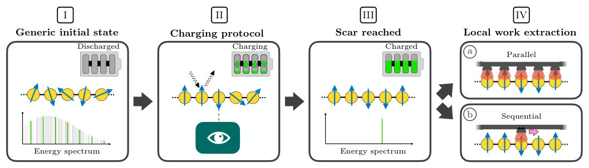
<figcaption class="paper-figure-caption"><b>Fig 1.</b> Figure 1. Schematic representation of the battery charging and discharging protocols. The charge–discharge cycle proceeds in four stages. I The battery starts in some arbitrary state represented in terms of a distribution over its energy spectrum. The ETH bulk (gray lines) is interspersed by rare equidistantly spaced scars (green lines). This is considered a discharged state of the battery, as it is useless for local work extraction. II The universal charging protocol sets in, where the concurrent action of local engineered dissipation and continuous measurement of a local operator filters out the ETH bulk while driving the system to one of the scars. III Each scar represents a charged...</figcaption>
</figure>
<figure class="paper-figure-card">
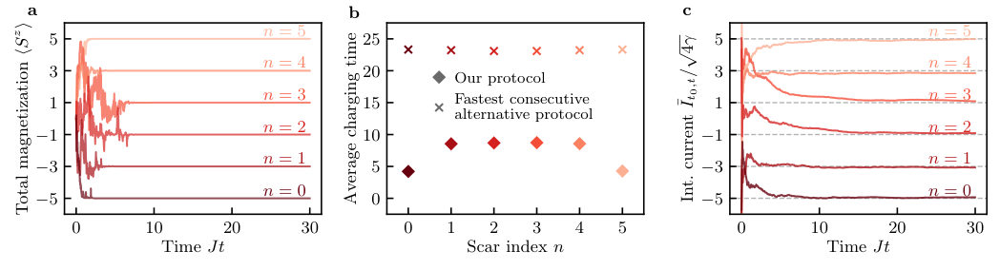
<figcaption class="paper-figure-caption"><b>Fig 2.</b> Figure 2. Battery charging and certification for the spin-1 XY chain. The universal charging protocol [Eq. (6)] drives every initial state into a scar. Here it is realized by choosing M = Sz, where Sz is the total magnetization, and the jump operators as in Eq. (11). For N = 5 the model hosts six scars |sn⟩with n = 0, . . . , 5, represented by different colors indicated on top of the figure. a, Six typical realizations of the protocol for the same initial state ρ(0) = 1/3N. The convergence of trajectories to scars is witnessed by tracking ⟨Sz⟩= tr(ρc tSz)—by construction, each scar is an eigenvector of Sz with a distinct eigenvalue. b, Average charging time of our protocol, quantified by...</figcaption>
</figure>
<figure class="paper-figure-card">
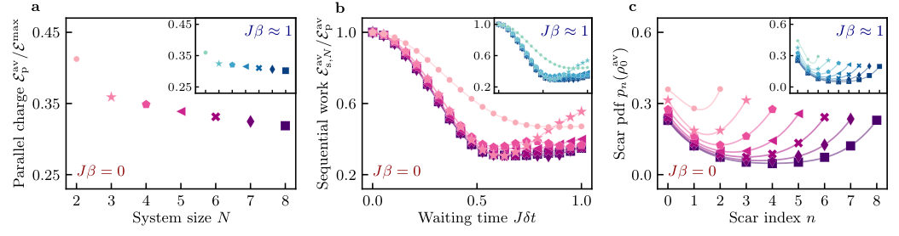
<figcaption class="paper-figure-caption"><b>Fig 3.</b> Figure 3. Battery characterization of the spin-1 XY chain. The initial state ρ0 is sampled from the Scrooge ensemble [49], so that ρav 0 = exp(−βH)/Z, with Z the partition function. In the main panels, β = 0, whereas in the insets, Jβ ≈1 (see SI for details on this choice). a, Average charge of the battery that can be retrieved by locally discharging all cells simultaneously, Eav p , scaled by its maximal capacity Emax, as a function of the system size. Recall that Emax = Emax −Emin, with Emax and Emin the largest and smallest eigenvalues of H, and thus it can only be attained by initializing the system in its highest energy eigenstate and then rotating it to the ground state via highly...</figcaption>
</figure>
<figure class="paper-figure-card">
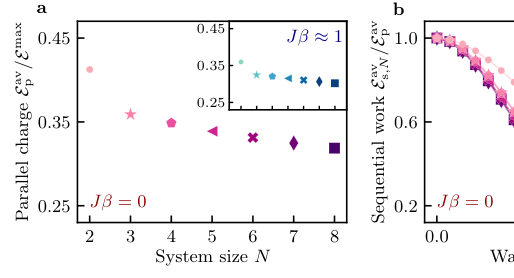
<figcaption class="paper-figure-caption"><b>Fig 4.</b> Figure 3(a) shows Eav p scaled by the maximal capacity Emax, which equals the largest eigenvalue difference of H, with ρav 0 ∝exp(−βH), for different values of β. As argued above, a more realistic usage scenario for a many-body bat- tery is the sequential cell-by-cell discharging, characterized by Es,ℓ(ρ, δt) [Eq. (2)]. Figure 3(b) shows that its ensem- ble average, Eav s,N(δt), is appreciably robust with respect to variations of δt. Furthermore, we show in the SI that cer- tain scars support stable, almost linear in ℓ, discharging for waiting times as large as Jδt ≈0.42. The apparent macroscopicity of Eav p in Fig. 3(a) results from the counterintuitive behavior of the asymptotic scar...</figcaption>
</figure>
</div>

<p><strong>Summary.</strong> This paper introduces a novel, low-complexity protocol to extract macroscopic work from quantum batteries modeled by nonintegrable many-body systems. It achieves this by using a combination of engineered dissipation and continuous measurement to force the system into a rare, stable 'scar' state. This method bypasses the limitations imposed by the Eigenstate Thermalization Hypothesis, offering a pathway for reliable quantum energy storage.</p>
<p><strong>Why it may be interesting.</strong> This work directly addresses non-equilibrium thermodynamics and energy harvesting in complex quantum matter, providing a concrete, hardware-implementable mechanism for energy storage in interacting quantum systems.</p>
<details>
<summary>Detailed structure</summary>
<p><strong>Main problem.</strong> The core challenge is developing a reliable, local method to extract macroscopic amounts of work from large, strongly interacting quantum systems (quantum batteries) whose bulk eigenstates are useless due to thermalization.</p>
<p><strong>Main result.</strong> The authors propose a combined protocol using engineered dissipation and continuous indirect measurement to steer the system into a rare, non-thermal 'scar' state, enabling sustained, local work extraction.</p>
<p><strong>Method.</strong> The protocol is derived using quantum stochastic differential equations, combining engineered Lindblad dissipation with measurement backaction to drive the system to a specific, stable steady state.</p>
<p><strong>Model / system.</strong> The study focuses on generic nonintegrable many-body systems, exemplified by the spin-1 XY chain Hamiltonian. The key resource is the 'scar' state, which is a specific, non-thermal eigenstate.</p>
<p><strong>Key observables.</strong> Local ergotropy (extractable work), average charging time, and the time-integrated measurement current used for scar certification.</p>
<p><strong>Important parameters / regimes.</strong> The protocol's performance is analyzed across various coupling regimes and depends on the structure of the underlying algebra (e.g., su(2)).</p>
<p><strong>Assumptions / limitations.</strong> The protocol is assumed to work directly on hardware, requiring no simulation or suppression of interactions between subsystems.</p>
<p><strong>Figures summary.</strong> Figures illustrate the four stages of the process (discharged to work extraction), compare the charging time of the proposed protocol against alternatives, and show the time-integrated measurement current for state certification.</p>
<p><strong>Paper structure.</strong> The paper first establishes the physical limitation (ETH bulk vs. local work). It then details the combined protocol (dissipation + measurement) to reach a scar state. Finally, it optimizes the local unitaries to calculate the maximum extractable work from the resulting scar state.</p>
</details>
<details>
<summary>Abstract</summary>
<p>Realistic work extraction from many-body quantum batteries must be local. However, only a small fraction of energy eigenstates of a generic many-body system, called scars, can support local extraction. The remaining bulk is useless for the task due to the eigenstate thermalization hypothesis. Here we devise a universal low-complexity protocol that steers any initial state towards exactly one scar---representing a charged state of the battery---from which a macroscopic amount of work can be extracted using local unitary operations. This is achieved by leveraging the nontrivial interplay of engineered dissipation and continuous indirect measurement that, in addition, leads to enhanced stability and charging speed compared to any other strategy using these processes independently. Moreover, the protocol works directly on the hardware level, in that it requires no simulation or suppression of interactions between subsystems. Our construction thereby enables macroscopic charge storage in steady states of generic nonintegrable many-body systems indefinitely, from which a reliable stream of work can be extracted via purely local means.</p>
</details>
<p><sub><a href="#top">↑ back to top</a></sub></p>

<p><a id="paper-2609.21300"></a></p>
<h3 id="the-critical-role-of-itinerant-contributions-to-orbital-angular-momentum-relaxation-and-dynamics"><a href="http://arxiv.org/abs/2609.21300v1">The Critical Role of Itinerant Contributions to Orbital Angular Momentum Relaxation and Dynamics</a></h3>
<p><strong>Authors:</strong> Andrew C. Grieder, Luis M. Canonico, Frederico Simões, Aron W. Cummings, Yuan Ping<br>
<strong>Type:</strong> theory · <strong>Category:</strong> other · <strong>PDF:</strong> <a href="https://arxiv.org/pdf/2609.21300v1">https://arxiv.org/pdf/2609.21300v1</a><br>
<strong>Analysis basis:</strong> full PDF text, analyzed in chunks
<strong>Topic relevance:</strong> 🔥 <code>methods for driven-dissipative</code> <strong>4/5</strong> · <code>Keldysh / 2PI / non-Gaussian methods</code> <strong>3/5</strong> · <code>correlated / nonlocal dissipation</code> <strong>3/5</strong> · <code>driven-dissipative phase transition</code> <strong>2/5</strong> · <code>non-equilibrium universality</code> <strong>2/5</strong> · <code>analog quantum simulation</code> <strong>1/5</strong> · <code>quantum measurements</code> <strong>1/5</strong> · <code>scars &amp; prethermalization</code> <strong>1/5</strong></p>
<div class="figure-strip-hint">↔ Scroll figures horizontally</div>
<div class="paper-figures-scroll">
<figure class="paper-figure-card">
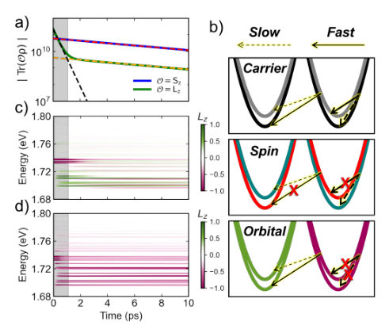
<figcaption class="paper-figure-caption"><b>Fig 1.</b> FIG. 1. Spin and orbital dynamics of optically excited electrons in MoS2. (a) Spin and orbital relaxation at 300 K. Dashed lines indicate the two decay time scales, 0.25 ps (black) and 6.1 ps (orange, red). (b) Schematics of carrier, spin, and orbital inter- and intra-valley relaxation pathways. (c) Energy-resolved orbital relaxation for only intervalley re- laxation, and (d) intravalley relaxation. The color scale indi- cates normalized orbital polarization.</figcaption>
</figure>
<figure class="paper-figure-card">
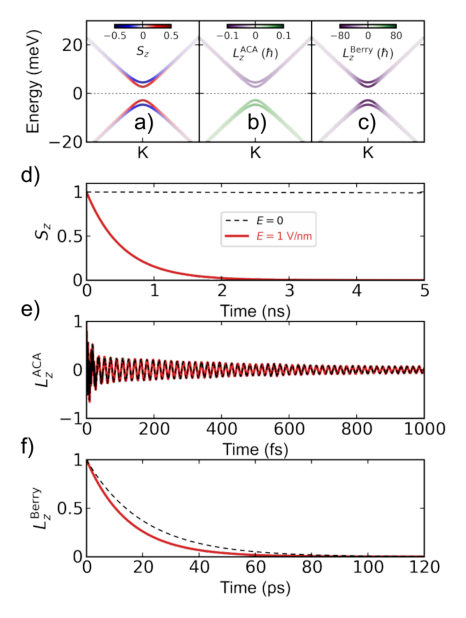
<figcaption class="paper-figure-caption"><b>Fig 2.</b> FIG. 2. Spin and orbital textures and dynamics in silicene near the K valley. (a-c) Band structure at E = 1 V/nm with color indicating (a) spin, (b) atom-centered OAM, and (c) itinerant OAM. Note the opposite (same) sign of Sz (Lz) of the field-split branches. (d-f) Polarization dynamics at E = 0 (dashed) and E = 1 V/nm (solid) for (d) spin by FPDMD at 100 K, (e) atom-centered OAM by TB, and (f) itinerant OAM by FPDMD at 100 K.</figcaption>
</figure>
<figure class="paper-figure-card">
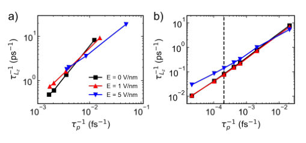
<figcaption class="paper-figure-caption"><b>Fig 3.</b> FIG. 4. Orbital relaxation rate as a function of momentum relaxation rate, for (a) the TB-ACA and (b) the FPDMD (Berry-phase) OAM at 100 K. Colors denote different applied electric fields. The dashed line in (b) denotes the intrinsic electron-phonon scattering rate.</figcaption>
</figure>
<figure class="paper-figure-card">

<figcaption class="paper-figure-caption"><b>Fig 4.</b> FIG. 3. Spin and orbital lifetimes in silicene, with the Fermi level at the conduction band minimum, as a function of ap- plied electric field. (a) Lifetimes arising from FPDMD with electron-phonon scattering at 100 K, and (b) lifetimes from real-space TB dynamics with Anderson disorder strength W = 700 meV. In (a), τ EY Sz and τ DP Sz are evaluated from the EY and DP models of spin relaxation. In (b), τ Berry Lz is the or- bital lifetime including the itinerant contributions and τ ACA Lz only considers the atom-centered component.</figcaption>
</figure>
<figure class="paper-figure-card">
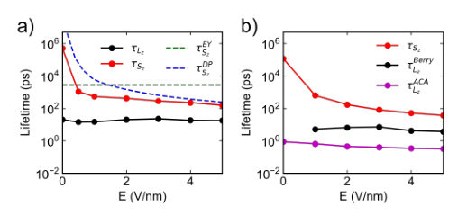
<figcaption class="paper-figure-caption"><b>Fig 5.</b> Fig. 2(e), which is independent of the external field and</figcaption>
</figure>
</div>

<p><strong>Summary.</strong> This work resolves a major theoretical conflict regarding orbital angular momentum (OAM) relaxation in 2D materials by distinguishing between atom-centered (ACA) and itinerant contributions. Using advanced density-matrix simulations, the authors show that the itinerant component, which accounts for momentum-space texture, dictates the true, much longer orbital lifetimes, proving that ACA models are insufficient for accurate predictions.</p>
<p><strong>Why it may be interesting.</strong> The explicit separation and comparison of local (ACA) versus delocalized (itinerant) degrees of freedom in a quantum system is highly relevant to understanding open quantum dynamics and decoherence mechanisms in solid-state devices.</p>
<details>
<summary>Detailed structure</summary>
<p><strong>Main problem.</strong> The paper addresses the discrepancy between predicted and experimentally observed orbital angular momentum (OAM) relaxation lengths, noting that atom-centered approximations (ACA) severely underestimate the true relaxation dynamics.</p>
<p><strong>Main result.</strong> The itinerant contribution to OAM relaxation, which captures momentum-space texture, is crucial and leads to orbital lifetimes significantly longer (by an order of magnitude) than those predicted by ACA models.</p>
<p><strong>Method.</strong> The study employs first-principles Lindbladian density-matrix dynamics and a parameterized tight-binding approach to explicitly separate and calculate the contributions of ACA and itinerant OAM components.</p>
<p><strong>Model / system.</strong> The research focuses on 2D materials like $ ext{MoS}_2$ (strong SOC) and silicene (weak SOC), analyzing orbital dynamics under electron-phonon scattering and external electric fields.</p>
<p><strong>Key observables.</strong> Orbital lifetimes ($   au_{Lz}$), OAM relaxation dynamics, spin-orbital coupling effects, and the ratio of itinerant to ACA relaxation rates.</p>
<p><strong>Important parameters / regimes.</strong> Spin-orbit coupling strength (SOC), electric field strength, and the distinction between intravalley and intervalley scattering channels.</p>
<p><strong>Assumptions / limitations.</strong> The primary assumption is that the full dynamics must be described by including the itinerant OAM component, moving beyond simplified atom-centered models.</p>
<p><strong>Figures summary.</strong> Figures illustrate the two distinct timescales of orbital relaxation in $  ext{MoS}_2$, contrast spin/orbital textures for ACA vs. itinerant OAM in silicene, and show the scaling of relaxation rates with momentum scattering rates.</p>
<p><strong>Paper structure.</strong> The paper establishes the theoretical discrepancy, details the advanced computational methods (FPDMD, TB), applies these methods to $  ext{MoS}_2$ and silicene to characterize the two OAM components, and concludes that the itinerant component governs the long-time dynamics.</p>
</details>
<details>
<summary>Abstract</summary>
<p>Orbital angular momentum (OAM) is a promising degree of freedom for low-dissipation transport and magnetization control, yet its relaxation mechanisms remain controversial, with atomcentered approximations (ACA) predicting much shorter OAM diffusion lengths than experiments. We address this discrepancy using first-principles Lindbladian density-matrix dynamics, capturing electron-phonon scattering and itinerant OAM contributions, together with a first-principles parameterized tight-binding approach that separates the ACA and itinerant components. In MoS2,a strong-spin-orbit-coupling (SOC) system, orbital relaxation is multi-timescale, with fast intervalley redistribution followed by slower decay coupled to the spin. In weak-SOC silicene, spin and orbital dynamics decouple; an electric field tunes spin relaxation while leaving orbital lifetimes unchanged. In both materials, ACA orbital lifetimes are at least one order of magnitude shorter than itinerant ones, due to ultrafast precession driven by crystal-field splitting, absent from the itinerant component. These results demonstrate that going beyond atom-centered models is essential for describing orbital relaxation and diffusion.</p>
</details>
<p><sub><a href="#top">↑ back to top</a></sub></p>

<p><a id="paper-2609.21086"></a></p>
<h3 id="autonomous-stabilization-of-many-body-entanglement-with-floquet-hamiltonians-and-weak-measurement"><a href="http://arxiv.org/abs/2609.21086v1">Autonomous stabilization of many-body entanglement with Floquet Hamiltonians and weak measurement</a></h3>
<p><strong>Authors:</strong> Charlotte Franke, Dorian A. Gangloff<br>
<strong>Type:</strong> theory · <strong>Category:</strong> quantum information and computing · <strong>PDF:</strong> <a href="https://arxiv.org/pdf/2609.21086v1">https://arxiv.org/pdf/2609.21086v1</a><br>
<strong>Analysis basis:</strong> full PDF text, analyzed in chunks
<strong>Topic relevance:</strong> 🔥 <code>quantum measurements</code> <strong>4/5</strong> · <code>correlated / nonlocal dissipation</code> <strong>3/5</strong> · <code>methods for driven-dissipative</code> <strong>3/5</strong> · <code>driven-dissipative phase transition</code> <strong>2/5</strong> · <code>analog quantum simulation</code> <strong>1/5</strong> · <code>non-equilibrium universality</code> <strong>1/5</strong></p>
<div class="figure-strip-hint">↔ Scroll figures horizontally</div>
<div class="paper-figures-scroll">
<figure class="paper-figure-card">
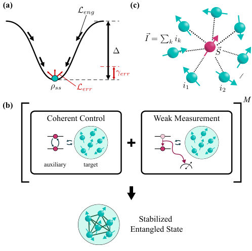
<figcaption class="paper-figure-caption"><b>Fig 1.</b> FIG. 1. Stroboscopic dissipative engineering. (a) The engineered dissipation Leng drives the system into a steady state ρss, protected by the Liouvillian gap ∆against residual error processes Lerr acting at rate γerr ≪∆. (b) Each cycle interleaves a coherent-control window, in which an auxiliary system interacts unitarily with the target, with a weak mea- surement of the auxiliary that induces dissipation. Repeating the cycle M times stabilizes the target in an entangled steady state. (c) Central-spin realization: a single electron spin ⃗S (auxiliary) is collectively coupled to a nuclear ensemble de- scribed by ⃗I = P</figcaption>
</figure>
<figure class="paper-figure-card">
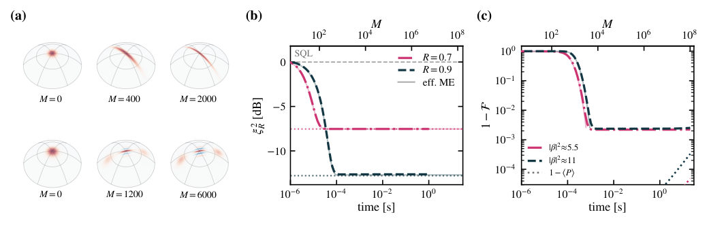
<figcaption class="paper-figure-caption"><b>Fig 2.</b> FIG. 2. Stabilization of the two targets. (a) Wigner snapshots on the Bloch sphere at cycle number M: the squeezed state (top) contracts along one quadrature, and the cat (bottom) splits off the pole into two lobes with interference fringes. Shown on a reduced ensemble (I = 100) for visibility. (b) Squeezing parameter ξ2 R versus time for ratios R = |Ω−/Ω+| = 0.7, 0.9, driven below the SQL (dashed) to the steady floors (dotted). (c) Cat infidelity 1 −F to the target even cat versus time, for sizes |β|2 ≈5.5 and ≈11. Dotted: the parity error 1 −⟨P⟩, which drifts up within the gapless 2D dark manifold and grows with cat size, staying below 10−3 out to ∼20s. In (b,c) the top axis is the...</figcaption>
</figure>
<figure class="paper-figure-card">
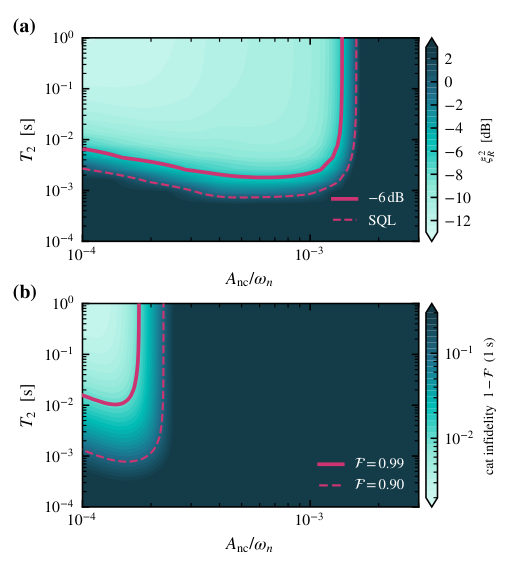
<figcaption class="paper-figure-caption"><b>Fig 3.</b> FIG. 3. Robustness to nuclear dephasing. Quality pa- rameter at 1s under collective dephasing over the coupling- coherence plane, from the full stroboscopic simulation. Each region is bounded on the left where the engineered Liouvillian gap drops below the dephasing rate. Stronger coupling widens the gap and tolerates shorter T2, up to a strong-coupling edge where the Floquet engineering breaks down. (a) Squeezing ξ2 R [dB] at R = 0.90; solid/dashed mark −6dB and the SQL. The floor is −12.6dB. (b) Cat infidelity 1 −F at fixed size |β|2 ≈5.5 (colour, log scale); solid and dashed lines mark F = 0.99 and F = 0.90 in a narrow high-fidelity window around Anc/ωn ∼1.5×10−4. Throughout, ωn/2π =...</figcaption>
</figure>
<figure class="paper-figure-card">
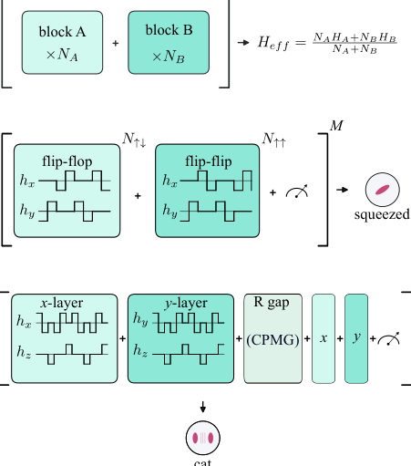
<figcaption class="paper-figure-caption"><b>Fig 4.</b> FIG. 4. Pulse sequences (toggling-frame controls h(t)). (a) General principle: a macro-cycle concatenates NA periods of block A and NB of block B and repeats ℓtimes; to leading (zeroth-order Magnus) order the engineered Hamiltonian is the time-weighted average Heff = (NAHA + NBHB)/(NA + NB) [Eq. (B13)]. (b) Squeezing: two 8-slot primitives over one period T, sharing a common hy and differing by a T/4 shift of hx (solid: flip-flop, S+I−+S−I+; dashed: flip-flip, S+I++S−I−); interleaving N↑↓flip-flop and N↑↑flip-flip pe- riods with a weak measurement stabilizes the squeezed state. (c) Cat: the engineered train Uφ (period 2T) runs an x- transverse layer (H2, t/T ∈[0, 1]) then a y-transverse...</figcaption>
</figure>
<figure class="paper-figure-card">
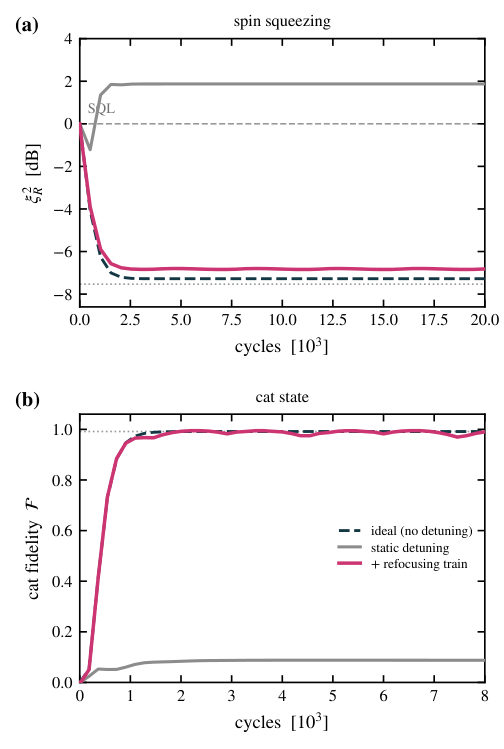
<figcaption class="paper-figure-caption"><b>Fig 5.</b> FIG. 5. A nuclear refocusing pulse train coexists with the stabilization. Full stroboscopic protocol at I = 50 (ex- act 2I + 1 space, so the π pulse is a genuine pole-to-pole rotation). (a) Spin squeezing ξ2 R(t), R = 0.7. (b) Cat fi- delity F(t), |β|2 ≈12. In each panel: the ideal run with no detuning (blue dashed); a static collective detuning δIz that destroys the engineered state (grey); and the same detuning with a single-π nuclear refocusing train interleaved, includ- ing the state-specific frame correction, a toggling-layer sign flip (flip-flop ↔flip-flip for squeezing; the H2-layer flip for the cat) together with the refocusing-pulse axis of Eq. (B30), which restores the engineered...</figcaption>
</figure>
</div>

<p><strong>Summary.</strong> This paper proposes a novel technique to autonomously stabilize complex many-body entangled states, such as spin-squeezed and Schrödinger-cat states, in quantum systems. The technique combines periodic Hamiltonian engineering (Floquet drives) with weak measurement to create a programmable dissipative environment. This approach offers a powerful pathway for practical quantum computation by actively counteracting environmental decoherence.</p>
<p><strong>Why it may be interesting.</strong> This work provides a concrete, platform-agnostic blueprint for actively controlling quantum dynamics using engineered dissipation, which is a key concept in quantum error correction and quantum control.</p>
<details>
<summary>Detailed structure</summary>
<p><strong>Main problem.</strong> Safeguarding many-body entanglement in large quantum systems against decoherence caused by dissipation.</p>
<p><strong>Main result.</strong> The authors successfully demonstrated an autonomous protocol to stabilize both spin-squeezed and collective Schrödinger-cat states, even against realistic noise levels.</p>
<p><strong>Method.</strong> The method interleaves Floquet Hamiltonian engineering to create non-native coherent interactions with weak measurement to impose a tunable dissipative channel.</p>
<p><strong>Model / system.</strong> The system is modeled using a central-spin system in a semiconductor quantum dot, coupling an electron spin ($\vec{S}$) to a nuclear spin ensemble ($\vec{I}$). The dynamics are governed by a stroboscopic evolution mimicking a Lindblad master equation.</p>
<p><strong>Key observables.</strong> Squeezing parameter ($\xi_2^R$), Cat infidelity ($1-F$), and the steady-state density matrix ($
ho_{ss}$).</p>
<p><strong>Important parameters / regimes.</strong> Weak measurement strength ($\epsilon$), Liouvillian gap ($\Delta$), and the ratio of coupling strengths ($\Omega_+/\Omega_-$).</p>
<p><strong>Assumptions / limitations.</strong> The process assumes the ability to separate coherent and dissipative steps in time, and that the auxiliary system decay is fast enough for adiabatic elimination.</p>
<p><strong>Figures summary.</strong> Figures illustrate the dissipative engineering cycle, show Wigner snapshots of stabilized states (squeezed/cat), and plot time evolution of the squeezing parameter and cat infidelity, demonstrating stabilization below the Standard Quantum Limit (SQL).</p>
<p><strong>Paper structure.</strong> The paper details the theoretical framework by combining Floquet engineering and weak measurement into a stroboscopic cycle. It then applies this to the quantum dot model to derive effective master equations for specific entangled states, analyzing robustness against various noise sources.</p>
</details>
<details>
<summary>Abstract</summary>
<p>Reaching a technological advantage with large quantum systems requires safeguarding their many-body entanglement. Dissipation typically acts to decohere a quantum system via random projective noise but, when judiciously engineered together with coherent interactions, it can funnel the system towards a target entangled state. The native interactions and dissipative channels available to most systems are, however, difficult to combine effectively. Here we propose interleaving Floquet Hamiltonian engineering, which allows the construction of non-native coherent interactions, with weak measurement, which enables a tuneable dissipative channel, to enable programmable and autonomous stabilization of many-body entanglement. We show this analytically and numerically for the central-spin system of a semiconductor quantum dot, for which we construct spin-squeezed and Schrödinger-cat states that are stabilized against realistic levels of dephasing. Our approach is applicable to any system compatible with periodic drives and tuneable measurement strength and could enable novel approaches to practical error correction.</p>
</details>
<p><sub><a href="#top">↑ back to top</a></sub></p>

<p><a id="paper-2609.20912"></a></p>
<h3 id="do-quantum-models-scale-like-llms"><a href="http://arxiv.org/abs/2609.20912v1">Do Quantum Models Scale Like LLMs?</a></h3>
<p><strong>Authors:</strong> David S. Berman, Ying-Jer Kao, Roger G. Melko, Alexander G. Stapleton<br>
<strong>Type:</strong> theory · <strong>Category:</strong> other · <strong>PDF:</strong> <a href="https://arxiv.org/pdf/2609.20912v1">https://arxiv.org/pdf/2609.20912v1</a><br>
<strong>Analysis basis:</strong> full PDF text, analyzed in chunks
<strong>Topic relevance:</strong> 🔥 <code>Rydberg arrays</code> <strong>4/5</strong> · <code>analog quantum simulation</code> <strong>3/5</strong> · <code>non-equilibrium universality</code> <strong>3/5</strong> · <code>quantum measurements</code> <strong>2/5</strong> · <code>Full counting statistics</code> <strong>1/5</strong> · <code>driven-dissipative phase transition</code> <strong>1/5</strong></p>
<div class="figure-strip-hint">↔ Scroll figures horizontally</div>
<div class="paper-figures-scroll">
<figure class="paper-figure-card">
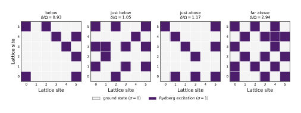
<figcaption class="paper-figure-caption"><b>Fig 1.</b> Figure 1: Representative randomly selected occupation- basis configurations from an open 6 × 6 Rydberg array at the four labelled detunings [14]. Light sites are in the ground state and dark sites represent Rydberg ex- citations. The samples were selected with a fixed pseu- dorandom seed from the same data archive used for the data-scaling and mutual-information analyses. They are individual measurements and are shown for visual orient- ation only.</figcaption>
</figure>
<figure class="paper-figure-card">
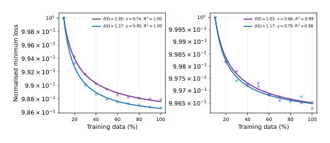
<figcaption class="paper-figure-caption"><b>Fig 2.</b> Figure 3: Normalised aggregate loss curves and fitted forms for the two detunings in Figure 2. Points are ob- served seed means and lines are fits to Equation (11). Each series is normalised by its largest observed loss for display only.</figcaption>
</figure>
<figure class="paper-figure-card">
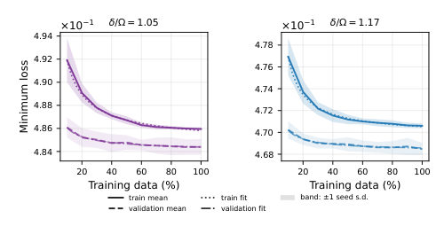
<figcaption class="paper-figure-caption"><b>Fig 3.</b> Figure 2: Fixed-model RydbergGPT data-scaling curves on the two sides of the critical detuning point. The sys- tem parameters are L = 6, Rb/a = 1.15 and βΩ= 8. Solid and dashed curves denote the seed-averaged training and validation losses, respectively; shaded re- gions show one standard deviation across seeds. Dotted and dash-dotted curves are fits to Equation (11). The scientific-notation multiplier is shown once per vertical axis.</figcaption>
</figure>
<figure class="paper-figure-card">
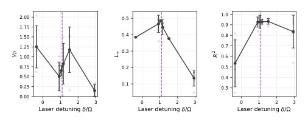
<figcaption class="paper-figure-caption"><b>Fig 4.</b> Figure 4: Validation-fit parameters for the six retained detunings. Faint points denote fits to individual ran- dom seeds, while circles and error bars indicate the cor- responding mean and standard deviation at each detun- ing. The dashed vertical line marks the critical point at δ/Ω= 1.10.</figcaption>
</figure>
<figure class="paper-figure-card">

<figcaption class="paper-figure-caption"><b>Fig 5.</b> Figure 4 extends the preceding analysis to six detun- ing values by displaying the results of validation fits per- formed independently for each random seed. The plot- ted spread directly characterises seed-to-seed variability in the fitted parameters and should not be interpreted as a confidence interval for a thermodynamic critical exponent. The values closest to the critical point at δ/Ω= 1.10 are consistent with the aggregate results re- ported in Table I. The strongest agreement with the power-law ansatz is observed in the vicinity of the critical point. Near the dashed line in Figure 4, the fitted R2 values are both high</figcaption>
</figure>
</div>

<p><strong>Summary.</strong> This work tests the hypothesis that quantum systems near a critical point exhibit scaling laws analogous to those seen in LLMs. By training a transformer on Rydberg atom measurements, the authors found that stable power-law scaling occurs only near criticality. Furthermore, the statistical dependencies of these near-critical quantum measurements closely match those found in natural language, suggesting multi-scale structure is key to robust scaling.</p>
<p><strong>Why it may be interesting.</strong> It bridges the gap between machine learning scaling laws and fundamental physics, suggesting that critical phenomena might manifest as universal scaling behaviors in information-theoretic measures, which is highly relevant for understanding complex quantum many-body systems.</p>
<details>
<summary>Detailed structure</summary>
<p><strong>Main problem.</strong> To investigate whether the scaling laws observed in Large Language Models (LLMs) are replicated when training transformers on quantum measurement data from interacting Rydberg atoms.</p>
<p><strong>Main result.</strong> The transformer loss exhibits stable power-law scaling near the quantum critical point, and the statistical structure of these near-critical measurements most closely resembles that of natural language corpora.</p>
<p><strong>Method.</strong> The study uses autoregressive transformers (RydbergGPT) to model qubit projective measurements and compares the resulting statistical dependencies using entropy-normalized mutual information 'two-point' functions.</p>
<p><strong>Model / system.</strong> The physical system is an interacting Rydberg atom array modeled by a Hamiltonian involving interaction terms and controlled by a laser detuning parameter ($\delta$). The model is trained on the resulting qubit projective measurement data.</p>
<p><strong>Key observables.</strong> Transformer loss vs. dataset size, and the entropy-normalized, finite sample corrected mutual information 'two-point' function $   ext{b}I(r)$.</p>
<p><strong>Important parameters / regimes.</strong> The laser detuning parameter ($\delta$), especially near the critical point ($\delta/\Omega \approx 1.1$), and the effective dataset size ($D_{	ext{eff}}$).</p>
<p><strong>Assumptions / limitations.</strong> The scaling behavior is hypothesized to be a property of the model-data pair, and the analysis relies on fitting empirical power-law ansatze to both loss and mutual information.</p>
<p><strong>Figures summary.</strong> Figures show representative occupation-basis measurements, data-scaling curves for the loss near and far from criticality, and mutual information profiles comparing Rydberg measurements to natural language corpora.</p>
<p><strong>Paper structure.</strong> The paper first establishes the quantum model and its critical behavior. It then analyzes the loss scaling laws, showing power-law behavior near criticality. Finally, it compares the statistical structure via mutual information, finding the strongest analogy to language near the critical point.</p>
</details>
<details>
<summary>Abstract</summary>
<p>In this work, we study the neural scaling laws of RydbergGPT, an autoregressive transformer model trained on qubit projective measurement data gathered from interacting Rydberg atom arrays. The quantum system is known to exhibit a finite-size remnant of a critical point as the laser detuning parameter is varied. We find that near the critical point the transformer loss as a function of training dataset size is well described by a power-law with a loss floor correction. However, away from criticality the quality of the power-law description is substantially reduced. We then compare the statistical structure of both Rydberg measurements and natural-language corpora using an entropy-normalised, finite sample corrected mutual information "two-point" function. We find that near-critical statistics of the two point functions are closest to those observed in natural-language, whilst other qubit configurations far from the critical point have two-point functions that decay more rapidly. This supports the hypothesis that multi-scale dependence contributes to stable neural scaling, and that scaling behaviour should be viewed as a property of the model-data pair.</p>
</details>
<p><sub><a href="#top">↑ back to top</a></sub></p>

<p><a id="paper-2609.21598"></a></p>
<h3 id="experimental-measurement-and-theoretical-analysis-of-energy-relaxation-rates-of-an-interacting-two-qubit-system-on-a-d-wave-quantum-annealer"><a href="http://arxiv.org/abs/2609.21598v1">Experimental Measurement and Theoretical Analysis of Energy Relaxation Rates of an Interacting Two-Qubit System on a D-Wave Quantum Annealer</a></h3>
<p><strong>Authors:</strong> Yusei Amano, Sorato Suzuki, Hiroki Kuji, Tetsuro Nikuni, Takashi Imoto, Yuichiro Matsuzaki<br>
<strong>Type:</strong> both · <strong>Category:</strong> quantum information and computing · <strong>PDF:</strong> <a href="https://arxiv.org/pdf/2609.21598v1">https://arxiv.org/pdf/2609.21598v1</a><br>
<strong>Analysis basis:</strong> full PDF text, analyzed in chunks
<strong>Topic relevance:</strong> 🔥 <code>QC/QI experiment</code> <strong>4/5</strong> · <code>quantum measurements</code> <strong>2/5</strong> · <code>correlated / nonlocal dissipation</code> <strong>1/5</strong> · <code>driven-dissipative phase transition</code> <strong>1/5</strong> · <code>methods for driven-dissipative</code> <strong>1/5</strong></p>
<div class="figure-strip-hint">↔ Scroll figures horizontally</div>
<div class="paper-figures-scroll">
<figure class="paper-figure-card">
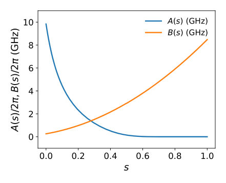
<figcaption class="paper-figure-caption"><b>Fig 1.</b> FIG. 1. Annealing schedule functions A(s) and B(s) for the D-Wave Advantage 4.1 quantum annealer. The curves were generated by the authors using the device-specific annealing- schedule data provided by D-Wave Quantum Inc. [30]. Here, s is the normalized annealing parameter ranging from 0 to 1. The function A(s) represents the transverse-field energy scale, whereas B(s) sets the energy scale multiplying the prob- lem Hamiltonian, including the longitudinal-field and Ising- interaction terms.</figcaption>
</figure>
<figure class="paper-figure-card">
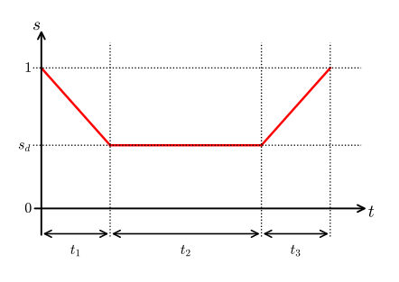
<figcaption class="paper-figure-caption"><b>Fig 2.</b> FIG. 2. Reverse-annealing schedule used to measure the re- laxation from the first excited state. The annealing parameter s is linearly decreased from s = 1 to the hold point s = sd over a time t1, kept at s = sd for a hold time t2, and then linearly increased back to s = 1 over a time t3.</figcaption>
</figure>
<figure class="paper-figure-card">
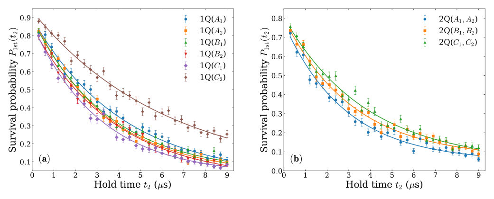
<figcaption class="paper-figure-caption"><b>Fig 3.</b> FIG. 3. Representative energy-relaxation curves for the single-qubit and interacting two-qubit systems. For all measurement conditions listed in Table I, the survival probability was measured as a function of the hold time t2, and the energy relaxation rate was extracted using the same weighted exponential fitting procedure. Panel (a) shows a representative single-qubit result corresponding to measurement condition No. 5 in Table I(a), whereas panel (b) shows a representative interacting two-qubit result corresponding to measurement condition No. 9 in Table I(b). The symbols represent the experimentally measured survival probabilities, and the solid curves represent the weighted exponential...</figcaption>
</figure>
<figure class="paper-figure-card">
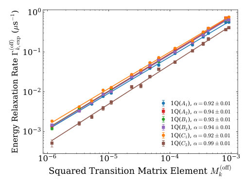
<figcaption class="paper-figure-caption"><b>Fig 4.</b> FIG. 4. Relationship between the squared transition matrix elements and the experimentally measured energy relaxation rates for single qubits in the non-interacting case. All data points shown in this figure correspond to the non-interacting measurement conditions listed in Table I(a). Each point rep- resents the result obtained by measuring each physical qubit as an individual single qubit. The horizontal axis shows the squared transition matrix element of qubit k, M (off) k , and the vertical axis shows the corresponding experimentally mea- sured energy relaxation rate, Γ(off) k,exp. Here, k = 1, 2 denotes the qubit index within each pair. For example, 1Q(A1) and 1Q(A2) in the legend...</figcaption>
</figure>
<figure class="paper-figure-card">
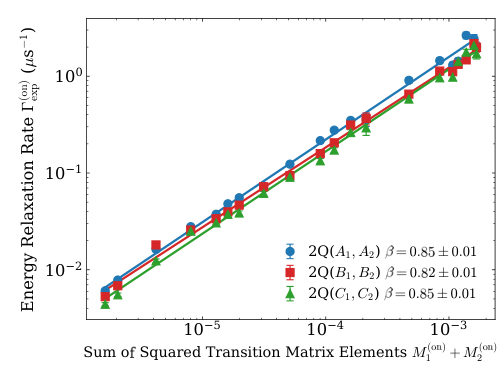
<figcaption class="paper-figure-caption"><b>Fig 5.</b> FIG. 5. Relationship between the sum of the squared tran- sition matrix elements and the experimentally measured en- ergy relaxation rate for the interacting two-qubit system. All data points shown in this figure correspond to the interacting two-qubit measurement conditions listed in Table I(b). The horizontal axis shows M (on) 1 + M (on) 2 , and the vertical axis shows Γ(on) exp . The value of β represents the scaling exponent obtained by fitting all data points for each qubit pair sepa- rately using Eq. (21). The obtained exponents are below the linear scaling β = 1 predicted by the model adopted in this study, which assumes independent σz-type noise and approx- imately constant...</figcaption>
</figure>
</div>

<p><strong>Summary.</strong> This paper experimentally measures and theoretically analyzes the energy relaxation rates in interacting two-qubit systems on a D-Wave quantum annealer. By relating these rates to entanglement measures like concurrence, the authors demonstrate that single-qubit measurements can provide a practical and quantitatively accurate estimate for relaxation in small interacting quantum circuits.</p>
<p><strong>Why it may be interesting.</strong> This work directly addresses open quantum system dynamics in a programmable quantum hardware platform, providing crucial experimental validation for theoretical models of decoherence in superconducting qubits.</p>
<details>
<summary>Detailed structure</summary>
<p><strong>Main problem.</strong> The study aims to bridge the gap between theoretical predictions and experimental measurements of energy relaxation rates in interacting multi-qubit systems implemented on quantum annealers.</p>
<p><strong>Main result.</strong> The predicted relaxation rates, derived by calibrating single-qubit measurements, remain within a factor of four of the experimentally measured rates, suggesting single-qubit measurements can practically estimate relaxation in small interacting systems.</p>
<p><strong>Method.</strong> The analysis combines experimental measurements of energy relaxation rates with theoretical modeling using the Gorini-Kossakowski-Sudarshan-Lindblad master equation.</p>
<p><strong>Model / system.</strong> The system is an interacting two-qubit model realized on a D-Wave quantum annealer using rf-SQUID flux qubits. The theory employs the GKSL master equation with independent local sigma_z noise channels.</p>
<p><strong>Key observables.</strong> Energy relaxation rate ($\Gamma$), Concurrence ($C$), and the squared transition matrix element ($\mu^{(on)}_k$).</p>
<p><strong>Important parameters / regimes.</strong> The energy gap ($\Delta E \approx 1.5 	ext{ GHz}$), and the noise model assumes independent local $\sigma_z$-type noise channels.</p>
<p><strong>Assumptions / limitations.</strong> The primary assumptions include the use of the Born-Markov and rotating wave approximations, and the assumption of independent noise channels between qubits.</p>
<p><strong>Figures summary.</strong> Figures compare theoretical calculations (e.g., concurrence vs. field strength) with experimental measurements of relaxation rates, often showing power-law scaling relationships between these quantities.</p>
<p><strong>Paper structure.</strong> The paper progresses from establishing the theoretical framework using the GKSL equation, to developing a prediction method by calibrating single-qubit rates, and finally correlating the measured relaxation rates with entanglement measures like concurrence.</p>
</details>
<details>
<summary>Abstract</summary>
<p>In D-Wave quantum annealers, various properties of the ground state have been clarified, whereas the correspondence between theory and experiment for energy relaxation rates in multiqubit excited states remains insufficiently understood. Here, we measured the energy relaxation rates of the first excited states in single-qubit systems and interacting two-qubit systems using a D-Wave quantum annealer. We analyzed the measured relaxation rates using a Gorini-Kossakowski-Sudarshan-Lindblad master equation with independent local $σ^{\,\,z}$-type noise channels. The calculated relaxation rates reproduced the overall trends observed experimentally, supporting the model at a qualitative level. We then used the relaxation rates measured for the uncoupled single-qubit systems to calibrate the local relaxation parameters and predict the relaxation rates of the interacting two-qubit systems. The predicted rates remained within a factor of approximately four of the measured rates. These results show that the relaxation measurements on individual qubits can provide a practical estimate of relaxation in small interacting quantum systems and may help clarify relaxation mechanisms in programmable quantum annealers.</p>
</details>
<p><sub><a href="#top">↑ back to top</a></sub></p>

<p><a id="paper-2609.21776"></a></p>
<h3 id="intrinsic-vectorial-gradiometry-via-quantum-control-of-a-spin-based-sensor"><a href="http://arxiv.org/abs/2609.21776v1">Intrinsic Vectorial Gradiometry via Quantum Control of a Spin-based Sensor</a></h3>
<p><strong>Authors:</strong> Jaime García Oliván, Pablo Acedo, Oliver T. Whaites, Jorge Casanova<br>
<strong>Type:</strong> theory · <strong>Category:</strong> other · <strong>PDF:</strong> <a href="https://arxiv.org/pdf/2609.21776v1">https://arxiv.org/pdf/2609.21776v1</a><br>
<strong>Analysis basis:</strong> full PDF text, analyzed in chunks
<strong>Topic relevance:</strong> 🔥 <code>quantum measurements</code> <strong>4/5</strong> · <code>QC/QI experiment</code> <strong>3/5</strong></p>
<div class="figure-strip-hint">↔ Scroll figures horizontally</div>
<div class="paper-figures-scroll">
<figure class="paper-figure-card">
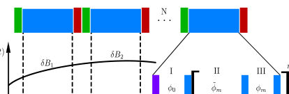
<figcaption class="paper-figure-caption"><b>Fig 1.</b> FIG. 1. Gradiometric sensing scheme. Our protocol comprises an initialization and a readout step, and a measurement sequence (in green, red and blue, respectively), sequentially repeated N times. Our sequence allows to measure the magnetic field difference between two points separated by a time ∆t. Considering that the magnetic field B(t) changes slowly within a single sequence, each measure- ment will be proportional to the field difference within the sequence, δBi = B(ti +∆t)−B(ti), such that, after N repetitions, the full gradient of the field can be recovered. Here, ti sets the start of i-th measure- ment. Each of these sequences consists of two interrogation stages (I and III) wherein...</figcaption>
</figure>
<figure class="paper-figure-card">
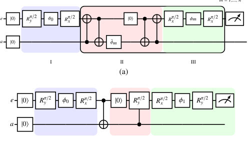
<figcaption class="paper-figure-caption"><b>Fig 2.</b> FIG. 2. Circuit diagram of the memory assisted pulse sequence for intrinsic temporal gradiometry. (a) General sequence for measuring the n-th order derivative of the field. SWAP gates may be used during stage II for encoding/recovering the sensor (e) state in/from a nuclear ancillary qubit (a) such that the protocol is limited by the nuclear de- phasing time T a 2. (b) Modified protocol for T a 1-limited magnetome- try. Here, only the population information is encoded in the nuclear memory during stage II.</figcaption>
</figure>
<figure class="paper-figure-card">
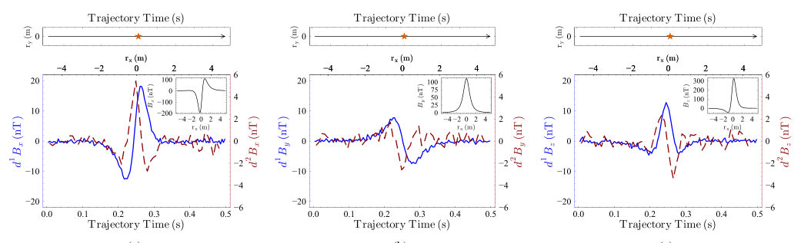
<figcaption class="paper-figure-caption"><b>Fig 3.</b> FIG. 4. Numerical simulation of vectorial gradiometry for magnetic anomaly detection. The sensor vibrates at a frequency ν/(2π) = 1 MHz and is displaced at a constant speed v = 20 m/s and height h = 1 m over the source of the magnetic anomaly (marked with a star), which is located at the center of the trajectory (shown in the top panel). The source of the anomaly is a ferromagnetic sphere of radius R = 16 cm, which is magnetized by a geomagnetic field of intensity B = 45.84 µT, colatitude ϑ = 105.63◦and longitude φ = 320.72◦. The intensity of the anomaly field as a function of the sensor position is shown in the inset. Nonetheless, the geomagnetic field is also included in the simulations....</figcaption>
</figure>
<figure class="paper-figure-card">
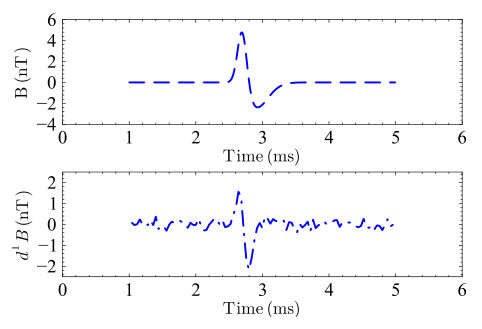
<figcaption class="paper-figure-caption"><b>Fig 4.</b> FIG. 5. (Upper panel) Expected magnetic field from a neuron AP in a giant axon from a marine worm. (Lower panel) Differential sig- nal measured from our gradiometry protocol. Stage II occurs in the sensor state and has a duration of 32 µs. Photon shot noise is ac- counted for in our simulation, such that the measurement contrast is C = 10%, the average number of photons received per NV center is nav = 0.022, the number of NVs in the ensemble is NNV = 1011 and the number of repetitions is 103. Note that the x-axis corresponds to a single run, such that the total duration of the ‘experiment’ is t = 4s.</figcaption>
</figure>
</div>

<p><strong>Summary.</strong> This paper introduces a novel quantum control protocol enabling intrinsic vectorial gradiometry of magnetic fields using a single quantum sensor, such as NV centers in diamond. By manipulating spin evolution through controlled pulse sequences, the method suppresses common-mode noise and provides direct access to magnetic field derivatives. This breakthrough has demonstrated potential for high-precision applications like detecting magnetic anomalies and mapping neuronal activity.</p>
<p><strong>Why it may be interesting.</strong> This work is highly relevant as it develops advanced quantum sensing protocols that leverage quantum coherence and memory effects to achieve superior noise suppression and higher-order field measurements, pushing the boundaries of quantum metrology.</p>
<details>
<summary>Detailed structure</summary>
<p><strong>Main problem.</strong> To overcome the limitations of traditional multi-sensor gradiometry by achieving intrinsic temporal and spatial vectorial gradiometry using a single quantum sensor.</p>
<p><strong>Main result.</strong> The proposed quantum control sequence allows for direct measurement of the first and higher-order derivatives of magnetic fields using only one sensor, which can be applied to detect magnetic anomalies or map neuronal action potentials.</p>
<p><strong>Method.</strong> The method employs a quantum control sequence involving initialization, signal evolution, and readout stages, which can be repeated or modified to measure field differences ($\delta b_i$) or higher-order derivatives ($\langle\sigma_z
angle^{(n)}$).</p>
<p><strong>Model / system.</strong> The physical platform is a quantum sensor, specifically Nitrogen-Vacancy (NV) centers in diamond, which is interrogated using tailored pulse sequences. The theory generalizes the measurement to any pair of electron and nuclear spin qubits.</p>
<p><strong>Key observables.</strong> The measured expectation value $\langle\sigma_z
angle$, which is proportional to the magnetic field difference ($\delta b_i$) or the $n$-th derivative of the field.</p>
<p><strong>Important parameters / regimes.</strong> The measurement is limited by the sensor dephasing time ($T_2$), but can be extended to the coherence time ($T_2$) or even the nuclear relaxation time ($T_1$) using memory techniques.</p>
<p><strong>Assumptions / limitations.</strong> The initial theoretical derivations assume small accumulated phases ($   ilde{\phi}_1$ small) for the gradient reconstruction, although AC sensing techniques allow for higher frequency measurements.</p>
<p><strong>Figures summary.</strong> Figures illustrate the gradiometric sensing scheme, detailing the multi-stage sequence for measuring field differences, and show circuit diagrams for memory-assisted pulse sequences for intrinsic temporal gradiometry.</p>
<p><strong>Paper structure.</strong> The paper develops the theory by first establishing the general quantum control sequence for gradiometry, then extending this to higher-order derivatives, and finally demonstrating the applicability of the protocol to both DC anomaly detection and high-frequency AC sensing via mechanical oscillation.</p>
</details>
<details>
<summary>Abstract</summary>
<p>Gradiometry provides a versatile alternative to passive environmental shielding in quasi-static magnetometry, effectively suppressing background noise through differential signal extraction. Nevertheless, traditional implementations rely on multi-sensor architectures restricted to spatial gradients, where subtracting signals from independent detectors involves imperfect suppression of common-mode noise and artifacts, limiting their sensitivity. To overcome these limitations, we introduce a quantum control sequence that enables intrinsic temporal and spatial vectorial gradiometry of magnetic fields using a single quantum sensor. Our method provides direct access to first and higher-order derivatives of the magnetic field and extended applicability via auxiliary nuclear spin memory. We showcase this protocol on an ensemble of nitrogen-vacancy (NV) centers in diamond and combine it with mechanical control to realize high-precision differential sensing. Through detailed numerical simulations, we demonstrate the performance of our scheme in two critical DC magnetometry applications: (i) vector magnetic anomaly detection and (ii) non-invasive gradiometry of neuronal action potentials.</p>
</details>
<p><sub><a href="#top">↑ back to top</a></sub></p>

<p><a id="paper-2609.21418"></a></p>
<h3 id="ultimate-information-rate-for-quantum-sensing-under-multilevel-relaxation"><a href="http://arxiv.org/abs/2609.21418v1">Ultimate Information Rate for Quantum Sensing under Multilevel Relaxation</a></h3>
<p><strong>Authors:</strong> Changhun Oh, Seok Hyung Lie, Youngrong Lim<br>
<strong>Type:</strong> theory · <strong>Category:</strong> quantum information and computing · <strong>PDF:</strong> <a href="https://arxiv.org/pdf/2609.21418v1">https://arxiv.org/pdf/2609.21418v1</a><br>
<strong>Analysis basis:</strong> full PDF text, analyzed in chunks
<strong>Topic relevance:</strong> 🔥 <code>quantum measurements</code> <strong>4/5</strong> · <code>correlated / nonlocal dissipation</code> <strong>1/5</strong> · <code>driven-dissipative phase transition</code> <strong>1/5</strong> · <code>methods for driven-dissipative</code> <strong>1/5</strong></p>
<div class="figure-strip-hint">↔ Scroll figures horizontally</div>
<div class="paper-figures-scroll">
<figure class="paper-figure-card">
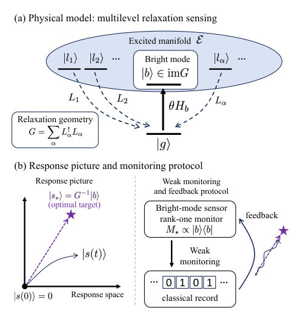
<figcaption class="paper-figure-caption"><b>Fig 1.</b> FIG. 1. Multilevel relaxation sensing and its optimal control. (a) The signal Hb couples the ground state to the excited manifold, which relaxes back to the ground state. (b) Weak monitoring along the bright direction and outcome-dependent feedback stabilize the rate-optimal response |s⋆⟩= G−1 |b⟩, continuously transferring information to the classical record.</figcaption>
</figure>
<figure class="paper-figure-card">
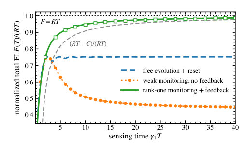
<figcaption class="paper-figure-caption"><b>Fig 2.</b> FIG. 2. Normalized total FI F(T)/(RT) for G = γ1 diag(1, 9) in the decay-mode basis {|µ1⟩, |µ2⟩} and |b⟩= (|µ1⟩+ |µ2⟩)/ √</figcaption>
</figure>
</div>

<p><strong>Summary.</strong> This paper establishes the theoretical limit for quantum sensing in multilevel systems subject to relaxation, proving that the ultimate information rate equals the bright state's mean population lifetime. They construct an explicit, simple monitoring protocol that achieves this rate asymptotically, demonstrating that entanglement cannot improve the rate beyond the sum of independent local rates.</p>
<p><strong>Why it may be interesting.</strong> This work provides a fundamental benchmark for quantum sensing in realistic, dissipative environments, showing how the intrinsic relaxation dynamics dictate the ultimate measurement precision, even with advanced adaptive control.</p>
<details>
<summary>Detailed structure</summary>
<p><strong>Main problem.</strong> The paper determines the ultimate rate at which information can be extracted from a quantum sensor undergoing multilevel relaxation, especially when using unrestricted adaptive control.</p>
<p><strong>Main result.</strong> The ultimate information rate is found to be exactly equal to the mean population lifetime of the bright state coupled by the signal. This rate can be achieved asymptotically using a simple rank-one monitoring and feedback protocol.</p>
<p><strong>Method.</strong> The authors derive the ultimate bound using the Channel-Extension (CE) bound and then construct an explicit, rank-one monitoring protocol that saturates this bound asymptotically.</p>
<p><strong>Model / system.</strong> The system is a multilevel quantum sensor with a ground state and an excited manifold. Sensing involves a weak field coupling the ground state to the excited manifold, while relaxation is governed by a master equation involving multiple decay modes.</p>
<p><strong>Key observables.</strong> Ultimate Information Rate ($R$), Quantum Fisher Information (QFI), and the mean population lifetime ($  au_b$).</p>
<p><strong>Important parameters / regimes.</strong> The relaxation geometry, characterized by the positive operator $G$, and the coupling strength of the weak signal.</p>
<p><strong>Assumptions / limitations.</strong> The analysis assumes independent local relaxation for multiple sensors and relies on the existence of an optimal rank-one monitoring strategy.</p>
<p><strong>Figures summary.</strong> Figures illustrate the physical model, the optimal control protocol involving weak monitoring and feedback, and comparisons between the ultimate bound, free evolution, and the achieved rate for multiple sensors.</p>
<p><strong>Paper structure.</strong> The paper progresses from establishing the theoretical upper bound (CE bound) to deriving the rate-optimal response, and finally constructing a physical, rank-one monitoring protocol that achieves this bound asymptotically.</p>
</details>
<details>
<summary>Abstract</summary>
<p>We determine the ultimate information rate of a relaxing multilevel quantum sensor under unrestricted adaptive control and construct an explicit strategy that attains it. We consider sensing a weak field that couples the ground state to several excited states that decay back to the ground state, a setting that reduces to amplitude-damping sensing for a single excited state. We show that the ultimate information rate is exactly the mean population lifetime of the bright state coupled to the ground state by the signal. Although the sensing dynamics generally involve several decay modes, an explicit rank-one protocol that monitors the ground--bright coherence using fresh meters and classical feedback attains this rate while keeping its finite-time information deficit bounded by a constant. For independently relaxing identical sensors, independent local monitoring attains the sum of their individual optimal rates, so intersensor entanglement and joint quantum error correction cannot increase the asymptotic rate. Consequently, the free population-decay curve provides an operational measure of the optimal sensing performance under arbitrary adaptive control.</p>
</details>
<p><sub><a href="#top">↑ back to top</a></sub></p>

<p><a id="paper-2609.21153"></a></p>
<h3 id="shock-capturing-quantum-algorithm-for-the-linear-advection-operator"><a href="http://arxiv.org/abs/2609.21153v1">Shock-Capturing Quantum Algorithm for the Linear Advection Operator</a></h3>
<p><strong>Authors:</strong> Samuel Hagele, William Gregory, Yuan Shi<br>
<strong>Type:</strong> both · <strong>Category:</strong> quantum information and computing · <strong>PDF:</strong> <a href="https://arxiv.org/pdf/2609.21153v1">https://arxiv.org/pdf/2609.21153v1</a><br>
<strong>Analysis basis:</strong> full PDF text, analyzed in chunks
<strong>Topic relevance:</strong> <code>QC/QI experiment</code> <strong>3/5</strong> · <code>correlated / nonlocal dissipation</code> <strong>3/5</strong> · <code>driven-dissipative phase transition</code> <strong>3/5</strong> · <code>methods for driven-dissipative</code> <strong>3/5</strong> · <code>analog quantum simulation</code> <strong>2/5</strong> · <code>non-equilibrium universality</code> <strong>2/5</strong> · <code>quantum measurements</code> <strong>2/5</strong> · <code>Keldysh / 2PI / non-Gaussian methods</code> <strong>1/5</strong></p>
<div class="figure-strip-hint">↔ Scroll figures horizontally</div>
<div class="paper-figures-scroll">
<figure class="paper-figure-card">
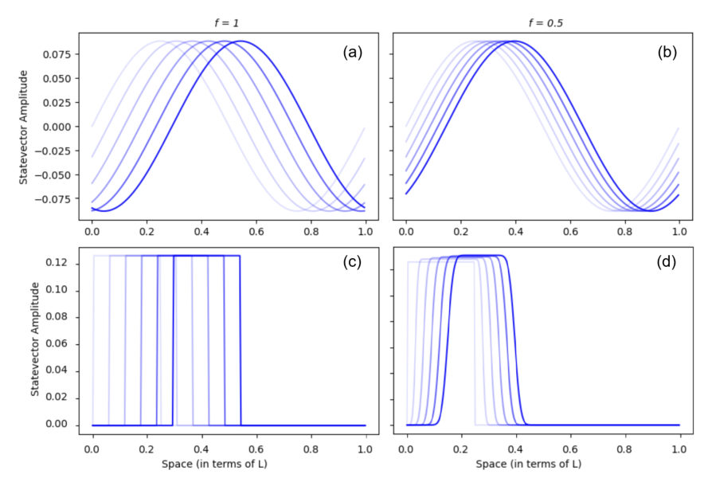
<figcaption class="paper-figure-caption"><b>Fig 1.</b> Figure 1: Using Qiskit’s state vector simulator, the upwind quantum advection operator is repeatedly applied to a sine (a)-(b) and a square (c)-(d) waveform on 8 data qubits with a positive speed. In each figure, lines are separated by 15 time steps, and later time steps are represented by darker lines. When f = 1 (left), the algorithm is exact. When 0 &lt; f &lt; 1, the algorithm introduces numerical diffusion, whose worst case (f = 1/2) is shown on the right. The advection algorithm preserves the norm of waveforms and their spatial integrals.</figcaption>
</figure>
<figure class="paper-figure-card">
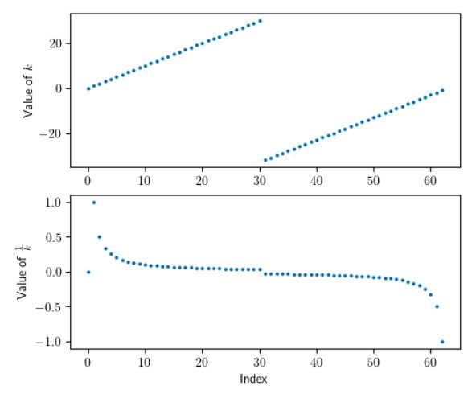
<figcaption class="paper-figure-caption"><b>Fig 2.</b> Figure 2: Failure recovery is performed in the momentum space after quantum Fourier transform, whose natural order- ing of k is unshifted (upper). The failure recovery scheme requires 1/k, which goes to zero towards the middle of the box (lower). The index starts from zero and the example uses N = 64 grid points.</figcaption>
</figure>
<figure class="paper-figure-card">
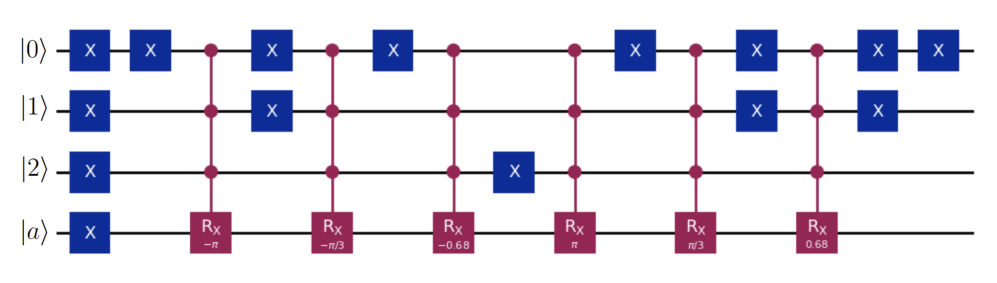
<figcaption class="paper-figure-caption"><b>Fig 3.</b> Figure 3: Quantum circuit for the failure recovery operator ˆK in the case of three data qubits and one ancilla qubit |a⟩. X (NOT) gates are initially applied to all qubits, setting the bit string to all 0’s. The X gate on the ancilla creates a tem- plate that resembles ˆK. We then count up in binary using X gates, applying appropriate multi-controlled RX rotations in between. At the halfway point, the single X gate on the last data qubit switches to the end of the ˆK matrix, from which the matrix is edited by the remaining gates in reverse order. The final X gates reset the bit string to its original values.</figcaption>
</figure>
<figure class="paper-figure-card">
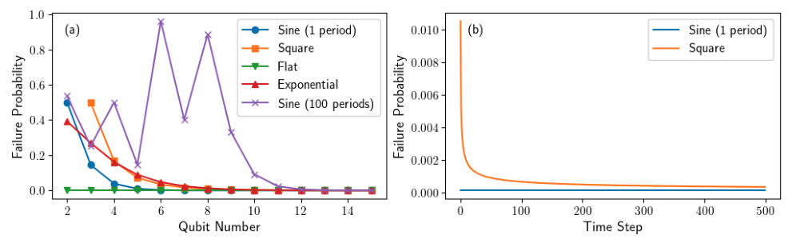
<figcaption class="paper-figure-caption"><b>Fig 4.</b> Figure 4: (a) The failure probability decreases exponentially with increasing resolution for all waveforms after transient be- haviors at small numbers of qubits. (b) At a given resolution (8 qubits), the failure probability decreases with time due to numerical diffusion that smooths the waveforms as the simulations progress. The failure probability is calculated classically according to Eq. (21) with the worst-case f = 1/2.</figcaption>
</figure>
<figure class="paper-figure-card">
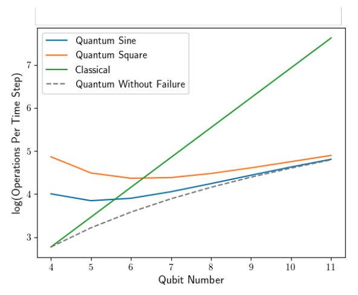
<figcaption class="paper-figure-caption"><b>Fig 5.</b> Figure 5: The expected number of operations per time step for the classical algorithm (green) and the quantum algorithm. In the absence of failure, the complexity of the ideal quantum algorithm (dashed gray line) attains an exponential speedup over the classical algorithm. In the presence of failure, whose probability depends on the initial waveforms, the non-ideal complexity for the sine (blue) and the square (orange) waveform is higher [Eq. (20)]. Nevertheless, the non-ideal complex- ity converges to the ideal case when the number of qubits increases. The non-ideal complexity is evaluated for propagation across one box length and for the worst-case f = 1/2.</figcaption>
</figure>
</div>

<p><strong>Summary.</strong> This paper presents a quantum algorithm for simulating the linear advection operator, a fundamental tool in fluid dynamics. It overcomes the non-unitary nature of the required numerical scheme by using Linear Combinations of Unitaries (LCUs) and introduces a novel failure recovery protocol based on the Quantum Fourier Transform. The result demonstrates an exponential speedup per time step while maintaining stability and providing rigorous analysis of the failure probability.</p>
<p><strong>Why it may be interesting.</strong> This work directly addresses the simulation of non-unitary, dissipative physical processes (like advection) on quantum computers, which is a major challenge beyond simple Hamiltonian evolution. The integration of failure recovery mechanisms makes it highly relevant for near-term quantum simulation.</p>
<details>
<summary>Detailed structure</summary>
<p><strong>Main problem.</strong> The paper develops a quantum algorithm to simulate the linear advection operator, which is crucial for fluid and plasma physics, while ensuring stability near sharp gradients.</p>
<p><strong>Main result.</strong> The quantum algorithm achieves an exponential speedup per time step over classical methods by implementing the non-unitary upwind scheme via Linear Combinations of Unitaries (LCUs) and incorporating a QFT-based failure recovery mechanism.</p>
<p><strong>Method.</strong> The core methodology involves embedding the non-unitary advection operator into a unitary framework using LCUs, and developing a probabilistic failure recovery scheme based on quantum indefinite integration using the Quantum Fourier Transform (QFT).</p>
<p><strong>Model / system.</strong> The model is the one-dimensional linear advection equation ($\partial_t A + c \cdot 
abla A = 0$) solved on a uniform spatial grid with periodic boundary conditions. The simulation is implemented on quantum hardware, demonstrated on trapped-ion qubits.</p>
<p><strong>Key observables.</strong> Waveform propagation (sine/square), failure probability ($P_{	ext{fail}}$), and computational gate complexity ($O(n^2)$ per step).</p>
<p><strong>Important parameters / regimes.</strong> CFL number ($f = |c|\Delta t / \Delta x$), system size ($N=2^n$), and the decay exponent $\alpha$ governing convergence.</p>
<p><strong>Assumptions / limitations.</strong> The primary assumptions include the applicability of LCUs to approximate the non-unitary operator and the assumption that the failure state is proportional to the derivative of the true state, enabling recovery.</p>
<p><strong>Figures summary.</strong> Figures demonstrate the quantum algorithm matching classical upwind results for both sine and square waveforms under advection, illustrating the stability and accuracy of the scheme.</p>
<p><strong>Paper structure.</strong> The paper introduces the physical problem and the need for a quantum approach. It details the use of LCUs to implement the non-unitary upwind scheme, followed by the development and analysis of a probabilistic failure recovery algorithm using QFT. Finally, it analyzes the convergence of the failure probability in the large $N$ limit.</p>
</details>
<details>
<summary>Abstract</summary>
<p>The linear advection operator is an ubiquitous building block in fluid and plasma problems. We develop a quantum algorithm for enacting the operator. When the advection velocity is constant in space, our algorithm is exponentially more efficient per time step than classical and avoids spurious oscillations near steep gradients. The algorithm is most cleanly illustrated using the one-dimensional advection equation on a uniform spatial grid with periodic boundary conditions, which can be extended to higher dimensions. The algorithm uses a first-order upwind scheme, which captures discontinuities in the wave envelope but is not unitary. We embed the non-unitary upwind scheme using Linear Combinations of Unitaries (LCUs), and develop an efficient quantum gate decomposition of the upwind unitary, which performs one step of advection using $O(n^2)$ two-qubit gates, where $N=2^n$ is the number of spatial grid points, as opposed to a classical computer which costs $O(N)$. Although LCUs introduces a small bounded probability of failure per time step, we show that the accumulation of failures does not lead to exponential-in-time complexity as one would naively expect. Moreover, when LCUs fails, we develop a probabilistic scheme to recover from the failure state, which avoids a full restart of the simulation. The failure recovery scheme uses quantum Fourier transform (QFT) and effectively achieves quantum indefinite integration of an unknown quantum state. The recovery, which can itself fail, is more efficient than a full restart if the wave envelop is well-resolved to include only low Fourier modes. We emulate our scheme classically and demonstrate small problems on Quantinuum's trapped-ion qubits. Our quantum algorithm provides a subroutine for physics simulations that involve linear advection.</p>
</details>
<p><sub><a href="#top">↑ back to top</a></sub></p>

<p><a id="paper-2609.21833"></a></p>
<h3 id="non-negative-differential-mobility-of-one-dimensional-underdamped-langevin-dynamics-proof-via-mapping-to-a-marginally-stable-oscillator"><a href="http://arxiv.org/abs/2609.21833v1">Non-negative differential mobility of one-dimensional underdamped Langevin dynamics: Proof via mapping to a marginally stable oscillator</a></h3>
<p><strong>Authors:</strong> Udo Seifert<br>
<strong>Type:</strong> theory · <strong>Category:</strong> statistical mechanics · <strong>PDF:</strong> <a href="https://arxiv.org/pdf/2609.21833v1">https://arxiv.org/pdf/2609.21833v1</a><br>
<strong>Analysis basis:</strong> full PDF text, analyzed in chunks
<strong>Topic relevance:</strong> <code>Frenkel-Kontorova</code> <strong>3/5</strong> · <code>Keldysh / 2PI / non-Gaussian methods</code> <strong>3/5</strong> · <code>driven-dissipative phase transition</code> <strong>3/5</strong> · <code>methods for driven-dissipative</code> <strong>3/5</strong> · <code>non-equilibrium universality</code> <strong>3/5</strong> · <code>correlated / nonlocal dissipation</code> <strong>1/5</strong> · <code>quantum measurements</code> <strong>1/5</strong> · <code>scars &amp; prethermalization</code> <strong>1/5</strong></p>
<div class="figure-strip-hint">↔ Scroll figures horizontally</div>
<div class="paper-figures-scroll">
<figure class="paper-figure-card">
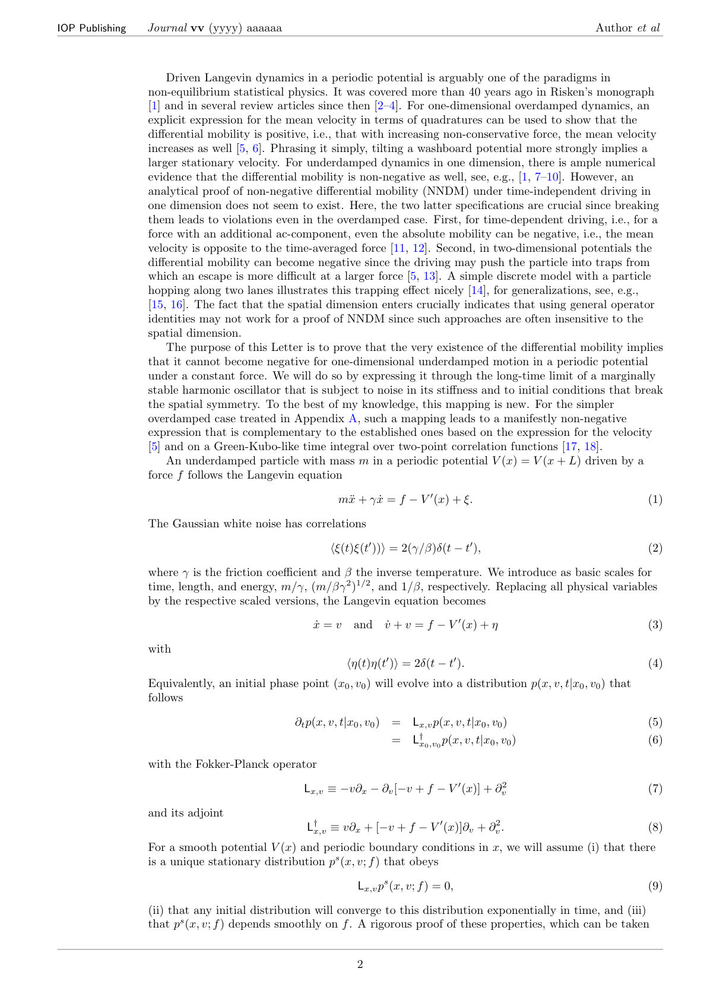
<figcaption class="paper-figure-caption"><b>Fig 1.</b> Low-resolution page preview, page 2</figcaption>
</figure>
<figure class="paper-figure-card">
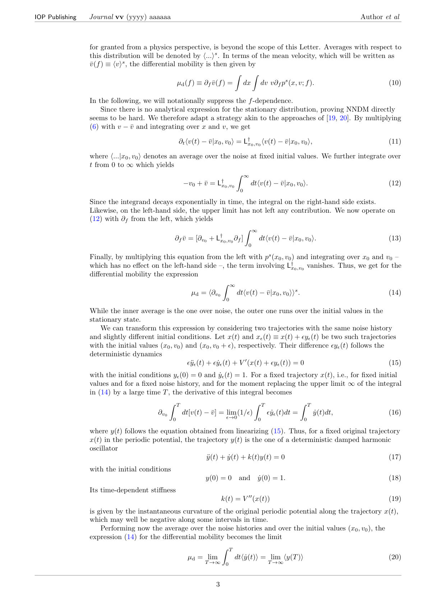
<figcaption class="paper-figure-caption"><b>Fig 2.</b> Low-resolution page preview, page 3</figcaption>
</figure>
<figure class="paper-figure-card">
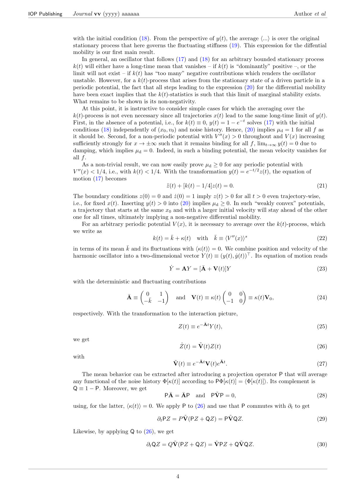
<figcaption class="paper-figure-caption"><b>Fig 3.</b> Low-resolution page preview, page 4</figcaption>
</figure>
<figure class="paper-figure-card">
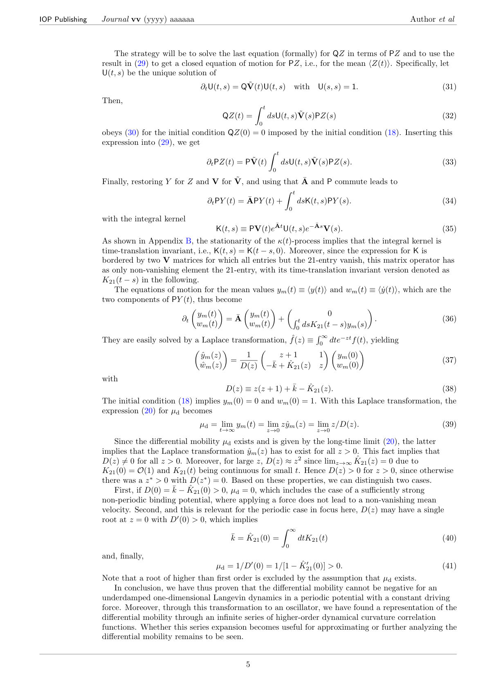
<figcaption class="paper-figure-caption"><b>Fig 4.</b> Low-resolution page preview, page 5</figcaption>
</figure>
<figure class="paper-figure-card">
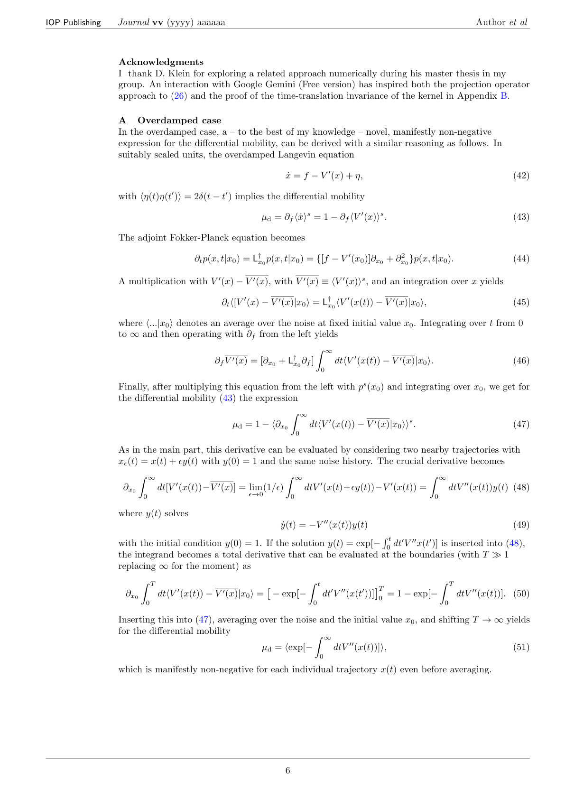
<figcaption class="paper-figure-caption"><b>Fig 5.</b> Low-resolution page preview, page 6</figcaption>
</figure>
</div>

<p><strong>Summary.</strong> This paper provides a rigorous analytical proof that the differential mobility for an underdamped particle in a periodic potential is non-negative. It achieves this by transforming the stochastic dynamics into an analysis of a marginally stable harmonic oscillator. The result is significant for understanding transport properties in systems driven by external forces.</p>
<p><strong>Why it may be interesting.</strong> The mathematical techniques used—analyzing long-time limits of stochastic differential equations via projection operators and spectral analysis—are highly relevant to non-equilibrium statistical mechanics and open quantum systems.</p>
<details>
<summary>Detailed structure</summary>
<p><strong>Main problem.</strong> To provide an analytical proof that the differential mobility ($\mu_d$) of one-dimensional underdamped Langevin dynamics driven by a constant non-conservative force across a periodic potential is non-negative.</p>
<p><strong>Main result.</strong> The differential mobility $\mu_d$ is proven to be non-negative ($\mu_d \ge 0$) for the underdamped case, with specific results derived for the zero-potential and binding potential limits.</p>
<p><strong>Method.</strong> The proof maps the problem to the long-time behavior of a marginally stable harmonic oscillator, utilizing projection operators and solving coupled equations of motion derived from the Fokker-Planck equation.</p>
<p><strong>Model / system.</strong> The system is a one-dimensional particle undergoing underdamped Langevin dynamics in a periodic potential $V(x)$, governed by the equation $m\ddot{x} + \gamma \dot{x} = f -V'(x) + \xi$.</p>
<p><strong>Key observables.</strong> Differential mobility ($\mu_d$), mean velocity ($\overline{v}(f)$), and the time evolution of the difference between velocity and mean velocity.</p>
<p><strong>Important parameters / regimes.</strong> The driving force $f$, the damping coefficient $\gamma$, and the potential curvature $V''(x)$.</p>
<p><strong>Assumptions / limitations.</strong> Assumes the existence of a unique stationary distribution and exponential convergence to it.</p>
<p><strong>Paper structure.</strong> The paper establishes the definition of $\mu_d$, relates it to the dynamics of a linearized oscillator, and then uses projection operators and Laplace transforms to derive and analyze the long-time limit of the mean correlation functions, leading to the final non-negativity proof.</p>
</details>
<details>
<summary>Abstract</summary>
<p>For an underdamped particle driven by a constant non-conservative force across a periodic potential in one spatial dimension at finite temperature, numerical studies have shown that the differential mobility is non-negative. Here, an analytical proof will be given that is based on expressing the differential mobility by the long-time mean position of a marginally stable harmonic oscillator subject to noise in its stiffness.</p>
</details>
<p><sub><a href="#top">↑ back to top</a></sub></p>

<p><a id="paper-2609.21560"></a></p>
<h3 id="giant-atom-induced-high-order-output-zeros-in-a-coupled-cavity-array"><a href="http://arxiv.org/abs/2609.21560v1">Giant-Atom-Induced High-Order Output Zeros in a Coupled-Cavity Array</a></h3>
<p><strong>Authors:</strong> Mengxue Li, Bo Liu, H. Z. Shen, H. D. Liu, Gangcheng Wang<br>
<strong>Type:</strong> theory · <strong>Category:</strong> other · <strong>PDF:</strong> <a href="https://arxiv.org/pdf/2609.21560v1">https://arxiv.org/pdf/2609.21560v1</a><br>
<strong>Analysis basis:</strong> full PDF text, analyzed in chunks
<strong>Topic relevance:</strong> <code>Tavis-Cummings &amp; cavity-many-emitter</code> <strong>3/5</strong> · <code>correlated / nonlocal dissipation</code> <strong>3/5</strong> · <code>interference shaping light</code> <strong>3/5</strong> · <code>analog quantum simulation</code> <strong>2/5</strong> · <code>driven-dissipative phase transition</code> <strong>2/5</strong> · <code>methods for driven-dissipative</code> <strong>2/5</strong> · <code>Keldysh / 2PI / non-Gaussian methods</code> <strong>1/5</strong> · <code>non-equilibrium universality</code> <strong>1/5</strong></p>
<div class="figure-strip-hint">↔ Scroll figures horizontally</div>
<div class="paper-figures-scroll">
<figure class="paper-figure-card">
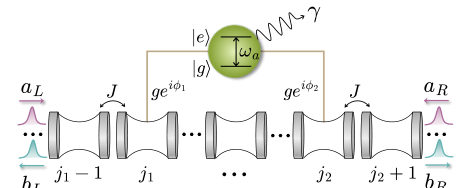
<figcaption class="paper-figure-caption"><b>Fig 1.</b> FIG. 1. Schematic of a two-site coupled giant atom interacting with a coupled-resonator waveguide. The waveguide consists of resonators interconnected with hopping strength J. The transition frequency of the two-level giant atom is ωa, and γ stands for the atomic dissipation rate. The giant atom couples to the j1th and j2th resonators with coupling strengths geiϕ1 and geiϕ2, respectively.</figcaption>
</figure>
<figure class="paper-figure-card">
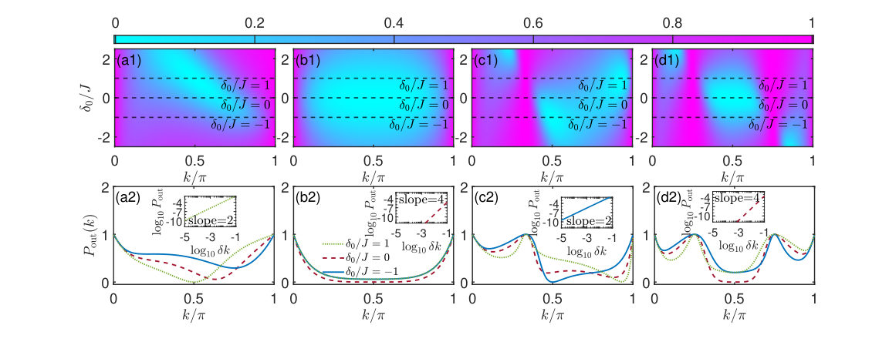
<figcaption class="paper-figure-caption"><b>Fig 2.</b> FIG. 2. Normalized total output intensity Pout(k) under two-sided coherent excitation as a function of various system parameters. (a1)–(d1) Density plots as a function of wave vector k and detuning δ0. Here δ0 = ωc −ωa. (a2)–(d2) The cuts indicated by the black dashed lines. The inset displays the corresponding double-logarithmic plots near k0 = π/2. The four columns correspond to (a) L = 1, ∆ϕ = 0, η = 1, g = J, and γ = 2J; (b) L = 2, ∆ϕ = π, η = −1, g = J, and γ = 4J; (c) L = 3, ∆ϕ = 0, η = 1, g = J, and γ = 2J; and (d) L = 4, ∆ϕ = 0, η = 1, g = J/ √</figcaption>
</figure>
<figure class="paper-figure-card">
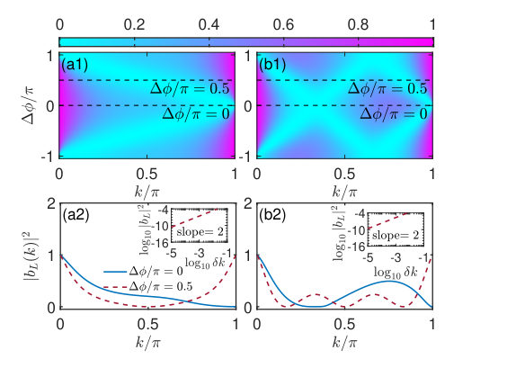
<figcaption class="paper-figure-caption"><b>Fig 3.</b> FIG. 3. Left-port reflection intensity |bL(k)|2 under single-sided inci- dence (η = 0) as a function of various system parameters. (a1)–(b1) Density plots as a function of wave vector k and ∆ϕ for L = 1 and 3, respectively. (a2)–(b2) The cuts indicated by the black dashed lines. The inset displays the corresponding double-logarithmic plots near k0 = π/2. The common parameters are ωc = ωa, g = J, and γ = 2J.</figcaption>
</figure>
<figure class="paper-figure-card">
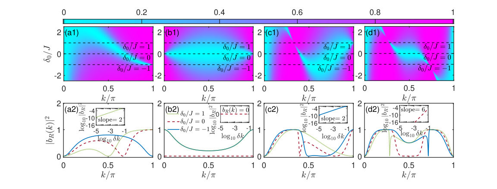
<figcaption class="paper-figure-caption"><b>Fig 4.</b> FIG. 4. Right-port transmission intensity |bR(k)|2 = |tL(k)|2 under single-sided incidence (η = 0) as a function of various system parameters. (a1)–(d1) Density plots as a function of wave vector k and detuning δ0. Here δ0 = ωc −ωa. (a2)–(d2) The cuts along the black dashed lines. The inset displays the corresponding double-logarithmic plots near k0 = π/2. The four columns correspond to (a) L = 1, ∆ϕ = 0, g = J, and γ = 0; (b) L = 2, ∆ϕ = π, g = J, and γ = 0; (c) L = 3, ∆ϕ = 0, g = J, and γ = 0; and (d) L = 4, ∆ϕ = 0, g = J/ √</figcaption>
</figure>
<figure class="paper-figure-card">
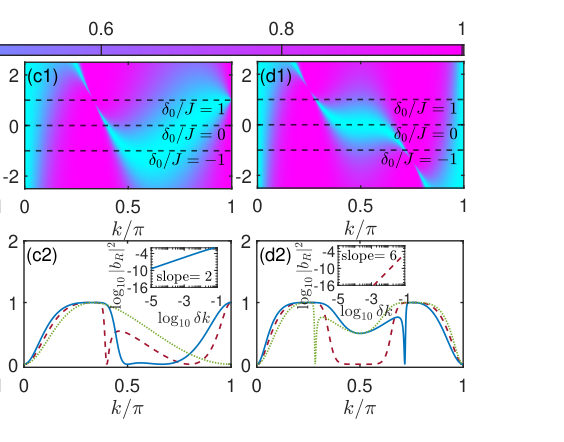
<figcaption class="paper-figure-caption"><b>Fig 5.</b> Figure 5 illustrates the dynamical evolution of scattering wave packets |uj(t)| with wave-packet width σ = 5 under distinct scattering regimes for L = 1. Figure 5(a) depicts the CPA realized by two counterpropagating Gaussian wave packets initially centered at jL = −201/2 and jR = 201/2. Counterpropagating wave-packet components with equal in- cident weights propagate toward the scattering center without reflection. When the two wave-packet components reach the scattering region, they are almost completely absorbed, with only negligible residual fields observed in the reflection and transmission channels. This phenomenon verifies the CPA ef- fect. Figure 5(b) shows the dynamics of a single...</figcaption>
</figure>
</div>

<p><strong>Summary.</strong> This paper proposes using a giant atom coupled nonlocally to a coupled-cavity array to achieve advanced wave control. By engineering the coupling geometry, the authors demonstrate a method to realize bandwidth-enhanced coherent perfect absorption and zero transmission. This approach is significant because it achieves these effects without relying on complex theoretical tools like exceptional points.</p>
<p><strong>Why it may be interesting.</strong> This work provides a concrete, physical mechanism using engineered quantum systems (giant atoms) to achieve advanced wave manipulation (high-order spectral control) in coupled quantum networks, which is highly relevant to cavity QED and open quantum systems.</p>
<details>
<summary>Detailed structure</summary>
<p><strong>Main problem.</strong> The research aims to engineer high-order output zeros in scattering phenomena, such as zero transmission or zero reflection, within coupled-cavity arrays.</p>
<p><strong>Main result.</strong> The giant-atom coupling mechanism enables bandwidth-enhanced coherent perfect absorption and zero transmission without needing exceptional points or momentum-dependent phase delays.</p>
<p><strong>Method.</strong> The analysis involves deriving the two-port scattering matrix S(k) and applying conditions on the derivatives of the output amplitudes with respect to the wave vector k.</p>
<p><strong>Model / system.</strong> The system consists of a two-level giant atom coupled nonlocally to a one-dimensional coupled-cavity array, modeled using a tight-binding Hamiltonian and analyzed via scattering theory.</p>
<p><strong>Key observables.</strong> Coherent Perfect Absorption (CPA), zero transmission, zero reflection, and the order of the output zeros (e.g., second-order CPA).</p>
<p><strong>Important parameters / regimes.</strong> Cavity frequency ($\omega_c$), atomic frequency ($\omega_a$), hopping rate ($J$), coupling strengths ($g_1, g_2$), and the spatial separation ($L$) of the coupling sites.</p>
<p><strong>Assumptions / limitations.</strong> The analysis assumes an infinite 1D array and focuses on the scattering response governed by the derived scattering matrix S(k).</p>
<p><strong>Figures summary.</strong> Figure 1 schematically illustrates the setup: a two-site coupled giant atom interacting with a coupled-resonator waveguide, detailing the coupling strengths.</p>
<p><strong>Paper structure.</strong> The paper establishes the physical model and Hamiltonian, derives the scattering matrix S(k), and then systematically applies conditions on the vanishing derivatives of the output amplitudes to achieve higher-order zero transmission/CPA.</p>
</details>
<details>
<summary>Abstract</summary>
<p>Coherent perfect absorption, zero transmission and zero reflection are several scattering phenomena governed by interference engineering in Hermitian and non-Hermitian systems. Higher-order coherent perfect absorption can significantly broaden the absorption bandwidth, while existing implementations rely on scattering zero degeneracy induced by exceptional points or additional momentum-dependent phase delays introduced in incident waves. We propose a scheme where a giant atom couples to a one-dimensional coupled-cavity array at two spatially separated sites. The spatially separated coupling configuration of the giant atom generates tunable nonlocal interference phases that dominate the scattering interference process. We further investigate the zero-reflection and zero-transmission behaviors under single-sided incidence. Remarkably, we find that for certain parameter choices, zero transmission can persist over the entire propagating band, rather than being restricted to a single momentum. Our results reveal that the giant-atom interference mechanism enables bandwidth-enhanced coherent perfect absorption and bandwidth-enhanced zero transmission in the absence of exceptional points and incident momentum-dependent phase delays. Our work provides a physical route for coherent wave manipulation in coupled-cavity quantum networks.</p>
</details>
<p><sub><a href="#top">↑ back to top</a></sub></p>

<p><a id="paper-2609.21004"></a></p>
<h3 id="arctic-curves-and-a-gapped-gas-phase-in-a-two-band-free-fermion-chain"><a href="http://arxiv.org/abs/2609.21004v1">Arctic Curves and a Gapped Gas Phase in a Two-Band Free-Fermion Chain</a></h3>
<p><strong>Authors:</strong> Charles Jordan, Dimitri M. Gangardt, Alexander G. Abanov<br>
<strong>Type:</strong> theory · <strong>Category:</strong> statistical mechanics · <strong>PDF:</strong> <a href="https://arxiv.org/pdf/2609.21004v1">https://arxiv.org/pdf/2609.21004v1</a><br>
<strong>Analysis basis:</strong> full PDF text, analyzed in chunks
<strong>Topic relevance:</strong> <code>Frenkel-Kontorova</code> <strong>3/5</strong> · <code>Keldysh / 2PI / non-Gaussian methods</code> <strong>3/5</strong> · <code>analog quantum simulation</code> <strong>2/5</strong> · <code>driven-dissipative phase transition</code> <strong>2/5</strong> · <code>methods for driven-dissipative</code> <strong>2/5</strong> · <code>non-equilibrium universality</code> <strong>2/5</strong> · <code>quantum measurements</code> <strong>1/5</strong></p>
<div class="figure-strip-hint">↔ Scroll figures horizontally</div>
<div class="paper-figures-scroll">
<figure class="paper-figure-card">
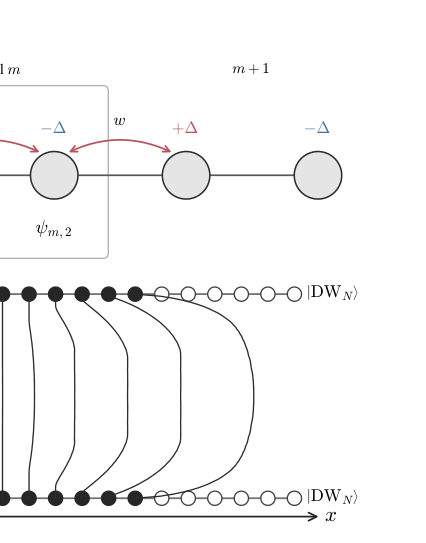
<figcaption class="paper-figure-caption"><b>Fig 1.</b> Figure 1: Model and Euclidean return geometry. (a) Rice-Mele free-fermion chain with a two-site unit cell (boxed). The red and blue orbitals have on-site potentials +∆ and −∆, respectively. The nearest-neighbor hopping amplitudes alternate between v and w in the general Rice–Mele chain; throughout the main text we specialize to uniform hopping, v = w = 1. (b) Euclidean slab of height 2R defining the finite- interval return amplitude ZN(R) = 〈DWN|e−2RÒ H|DWN〉. In the boundary state |DWN〉, both orbitals are occupied in the cells m = 0,..., N −1, while all other cells are empty. The figure shows both domain walls bounding the occupied interval.</figcaption>
</figure>
<figure class="paper-figure-card">
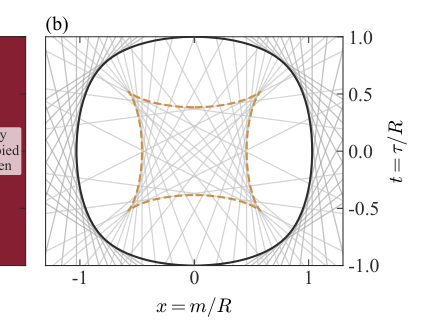
<figcaption class="paper-figure-caption"><b>Fig 2.</b> Figure 2: Space-time phase diagram for ∆= 2. (a) Finite-R average density ¯ρ(m,τ) = 1</figcaption>
</figure>
<figure class="paper-figure-card">
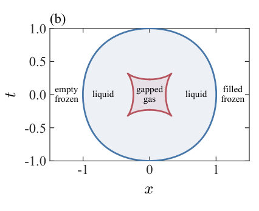
<figcaption class="paper-figure-caption"><b>Fig 3.</b> Figure 3: Spectral origin of the two arctic boundaries. (a) Branch-cut representation of the elliptic spectral curve η2 = z(z + κ)(z + κ−1) in the complex z-plane. The cuts are chosen along the positive interval [0,∞) and the compact negative interval [−κ,−κ−1]; their lifts form the two real components of the spectral curve. Both cuts cross the unit circle |z| = 1, shown by the dashed line. (b) Images of these intervals in the (x, t) plane under the parametric map in Eq. (13), obtained from the envelope condition ∂z xσ(t,z) = 0. The positive interval gives the outer frozen–liquid boundary, while the compact negative interval gives the inner liquid–gas boundary.</figcaption>
</figure>
<figure class="paper-figure-card">
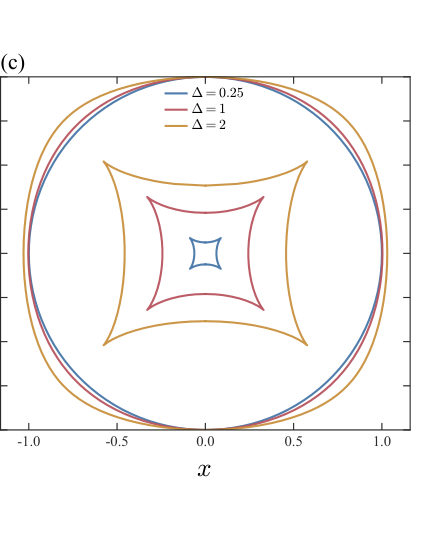
<figcaption class="paper-figure-caption"><b>Fig 4.</b> Figure 4: Gap dependence and diagnostics of the gas phase. (a) Finite-chain sublat- tice densities at t = 0, ∆= 2, and R = 6 are plotted in red circles for ρ1, blue squares for ρ2, and black circles for ¯ρ. Inside the shaded gas region their average is 1/2 and the individual densities approach Eq. (14). The analytic results for these densities presented in Section 8 are plotted in solid lines. (b) Connected cell-density correla- tions for a completely filled lower band and for a representative partially filled band. The former decay exponentially as in Eq. (16), whereas the latter show the r−2 liquid behavior of Eq. (15). Numerical results are shown for the gapped gas (blue) and a...</figcaption>
</figure>
<figure class="paper-figure-card">
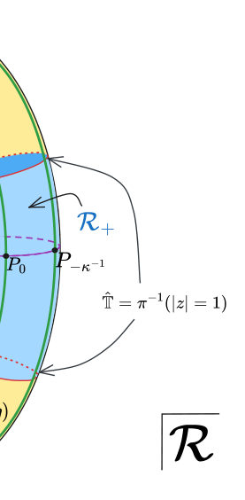
<figcaption class="paper-figure-caption"><b>Fig 5.</b> Figure 5: Schematic representation of the elliptic spectral curve η2(z) = z(z + κ)(z + κ−1) which defines a two-dimensional surface in four di- mensional space (z,η). Each point P = (z,η) on the surface has a conjugate point P∗= (z,−η), except for ramification (branch) points P = P∗for which η = 0 or ∞. The lift eT = π−1(|z| = 1) of the Wiener–Hopf contour |z| = 1 separates two domains, R+ and R−, corresponding to |z| &lt; 1 and |z| &gt; 1, respectively. The green lines are a-cycles surrounding branch cuts between pairs of ramification (branch) points P−κ = (−κ,0), P−κ−1 = (−κ−1,0) and P0 = (0,0), P∞= (∞,∞), while purple lines are b-cycles.</figcaption>
</figure>
</div>

<p><strong>Summary.</strong> This theoretical paper analyzes the phase structure of a two-band free-fermion chain, revealing a distinct frozen-liquid-gas regime. The authors use sophisticated mathematical methods, including Riemann-Hilbert factorization, to precisely locate the boundaries between these phases. This work provides a deep, mathematically rigorous understanding of how spectral gaps dictate macroscopic quantum behavior.</p>
<p><strong>Why it may be interesting.</strong> The connection between the gap-induced phase structure (gas phase) and the rigorous mathematical tools of Riemann-Hilbert problems and determinantal processes provides a powerful, generalizable framework for understanding quantum many-body ground states.</p>
<details>
<summary>Detailed structure</summary>
<p><strong>Main problem.</strong> The paper studies the imaginary-time evolution and resulting phase structure of a domain-wall state in a staggered free-fermion chain.</p>
<p><strong>Main result.</strong> It establishes a frozen-liquid-gas phase diagram, characterized by two 'arctic curves,' which are mathematically derived from the caustics of free quasiparticle trajectories.</p>
<p><strong>Method.</strong> The analysis employs advanced techniques including matrix Wiener-Hopf factorization, reduction to a scalar Riemann-Hilbert problem on an elliptic spectral curve, and connections to continuum hydrodynamics.</p>
<p><strong>Model / system.</strong> The system is a two-band free-fermion chain, a specific limit of the Rice-Mele chain, described by a Hamiltonian involving alternating on-site potentials and hopping terms.</p>
<p><strong>Key observables.</strong> Thermodynamic return amplitude, equal-time correlation kernel, local densities ($
ho_1, 
ho_2$), and the phase boundaries (arctic curves).</p>
<p><strong>Important parameters / regimes.</strong> The spectral gap ($\Delta$), the system size ($N$), and the imaginary time/spatial scaling parameters ($R, 	au$).</p>
<p><strong>Assumptions / limitations.</strong> The analysis relies on taking the thermodynamic limit ($N 	o \infty$) and the large time limit ($R 	o \infty$), and mapping the problem to a continuum description.</p>
<p><strong>Figures summary.</strong> Not specified, but the notes describe the geometry of the phase diagram and the mathematical derivation of the curves.</p>
<p><strong>Paper structure.</strong> The paper progresses from defining the physical model and key observables to applying advanced mathematical techniques (Toeplitz operators, Wiener-Hopf factorization) to derive the exact structure of the phase diagram and correlation functions.</p>
</details>
<details>
<summary>Abstract</summary>
<p>We study the imaginary-time evolution of a domain-wall state constrained to return to itself in a staggered free-fermion chain. The resulting space-time profile separates into frozen, liquid, and gas phases divided by sharp boundaries known as arctic curves. The spectral gap produces an incompressible half-filled gas phase bounded by an inner arctic curve, in addition to the outer frozen-liquid boundary. We determine both arctic curves, the thermodynamic return amplitude, and the complete equal-time correlation kernel. Correlations decay algebraically in the liquid regions and exponentially in the gas, while both arctic boundaries arise as caustics of free quasiparticle trajectories. The return amplitude and correlation kernel are respectively controlled by the determinant and inverse of the same block-Toeplitz operator. We obtain an exact matrix Wiener-Hopf factorization of this operator by reducing the problem to a scalar Riemann-Hilbert problem on an elliptic spectral curve. The factorization also yields the exact thermodynamic return amplitude: its logarithm consists of a quadratic term with explicit gap dependence and a bounded periodic theta-function correction. The resulting frozen-liquid-gas structure is a continuous-time free-fermion counterpart of that found in doubly periodic dimer models.</p>
</details>
<p><sub><a href="#top">↑ back to top</a></sub></p>

<p><a id="paper-2609.22025"></a></p>
<h3 id="cavity-qed-analysis-of-inas-quantum-dot-single-photon-production"><a href="http://arxiv.org/abs/2609.22025v1">Cavity-QED analysis of InAs quantum-dot single photon production</a></h3>
<p><strong>Authors:</strong> W. W. Chow, S. Peana, D. I. Herman, K. Y. Lee, A. Cejan, C. Shang, G. Moody, J. E. Bowers, F. Jahnke<br>
<strong>Type:</strong> theory · <strong>Category:</strong> other · <strong>PDF:</strong> <a href="https://arxiv.org/pdf/2609.22025v1">https://arxiv.org/pdf/2609.22025v1</a><br>
<strong>Analysis basis:</strong> full PDF text, analyzed in chunks
<strong>Topic relevance:</strong> <code>Tavis-Cummings &amp; cavity-many-emitter</code> <strong>3/5</strong> · <code>correlated / nonlocal dissipation</code> <strong>3/5</strong> · <code>Keldysh / 2PI / non-Gaussian methods</code> <strong>2/5</strong> · <code>analog quantum simulation</code> <strong>2/5</strong> · <code>methods for driven-dissipative</code> <strong>2/5</strong> · <code>driven-dissipative phase transition</code> <strong>1/5</strong> · <code>interference shaping light</code> <strong>1/5</strong> · <code>quantum measurements</code> <strong>1/5</strong></p>
<div class="figure-strip-hint">↔ Scroll figures horizontally</div>
<div class="paper-figures-scroll">
<figure class="paper-figure-card">
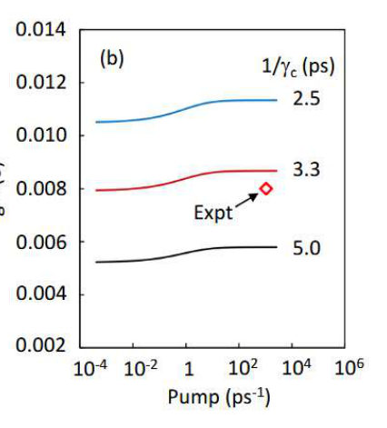
<figcaption class="paper-figure-caption"><b>Fig 1.</b> Figure 1. (a) Output and (b) equal-time intensity correlation 𝑔(2)(0) versus pump rate. The curves are for cavity photon lifetime 1/c as indicated. The experimental device gives single photon emission rate of 10−3 𝑝𝑠−1 and 𝑔(2)(0) = 0.008.</figcaption>
</figure>
<figure class="paper-figure-card">
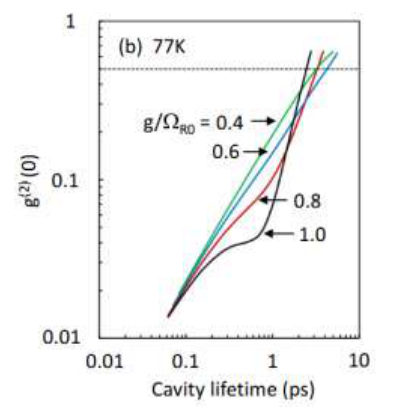
<figcaption class="paper-figure-caption"><b>Fig 2.</b> Figure 2. Computed (a) output and (b) 𝑔(2)(0) versus cavity lifetime for light-matter coupling strength as labeled. The dashed portions in Figure 2 (a) indicate when 𝑔(2)(0) &gt; 0.5.</figcaption>
</figure>
<figure class="paper-figure-card">

<figcaption class="paper-figure-caption"><b>Fig 3.</b> Figure 3. (a) 𝑔(2)(0) versus cavity lifetime at liquid He temperature, using 𝛾= 3.9 × 1010 𝑠−1for 𝑇= 4 𝐾. (b) Multiphoton expectation value and (c) 𝑔(2)(0) versus cavity lifetime computed for 𝑔= Ω𝑅0, with and without the (𝑛𝑒+ 𝑛ℎ− 1)𝛿〈𝑎†𝑎†𝑎𝑎〉 contribution in the equation of motion for 𝛿〈𝑏†𝑐†𝑎†𝑎𝑎〉 (solid and dashed curves, respectively).</figcaption>
</figure>
<figure class="paper-figure-card">

<figcaption class="paper-figure-caption"><b>Fig 4.</b> Figure 4. Coincidence count versus product of photon output rate and coherence time. The data points are from calculations at 𝑇= 4 𝐾 and 77 𝐾.</figcaption>
</figure>
<figure class="paper-figure-card">

<figcaption class="paper-figure-caption"><b>Fig 5.</b> Figure 5 are plots of coherence time and indisguishability versus cavity lifetime, for</figcaption>
</figure>
</div>

<p><strong>Summary.</strong> This theoretical paper analyzes single-photon generation from InAs quantum dots coupled to optical cavities using Cavity-QED. It models the system dynamics by incorporating complex quantum carrier-photon correlations into the equations of motion. The key finding is that these correlations significantly modify performance metrics like purity and rate, revealing crucial trade-offs that must be accounted for beyond simple mean-field approximations.</p>
<p><strong>Why it may be interesting.</strong> This work is highly relevant as it tackles the non-trivial quantum corrections (beyond mean-field) necessary for accurately predicting single-photon sources in solid-state quantum emitters, a core topic in cavity QED.</p>
<details>
<summary>Detailed structure</summary>
<p><strong>Main problem.</strong> The study investigates how cavity enhancement affects the single photon performance (rate, purity, and indistinguishability) of an InAs quantum dot.</p>
<p><strong>Main result.</strong> The analysis reveals fundamental trade-offs between single photon production rate and purity, emphasizing that quantum carrier-photon correlations provide substantial corrections beyond mean-field predictions, especially at high coupling strengths.</p>
<p><strong>Method.</strong> The authors use a theoretical framework based on the Heisenberg picture, deriving equations of motion for various correlation terms and employing a factorization scheme to separate mean-field and correlation contributions.</p>
<p><strong>Model / system.</strong> The system modeled is an InAs quantum dot coupled to an optical micro- or nanocavity, described by a Hamiltonian involving photon, electron, and hole operators. The analysis tracks the evolution of populations and polarizations.</p>
<p><strong>Key observables.</strong> Single photon emission rate ($\gamma_c n_p$), purity ($g^{(2)}(0)$), indistinguishability ($\eta_{ind}$), and coherence time ($    au_{coh}$).</p>
<p><strong>Important parameters / regimes.</strong> Light-matter coupling strength ($g$), cavity photon decay rate ($\gamma_c$), dephasing rate ($\gamma$), and temperature ($T$).</p>
<p><strong>Assumptions / limitations.</strong> Initial parametric studies often neglect correlation terms for computational ease, and the analysis assumes steady-state values for solving correlation functions.</p>
<p><strong>Figures summary.</strong> Figures compare $\gamma_c n_p$ and $g^{(2)}(0)$ vs. pump rate or cavity lifetime, illustrating the impact of correlation terms and temperature on single-photon metrics.</p>
<p><strong>Paper structure.</strong> The paper develops the theory by deriving equations of motion, performing parametric studies comparing mean-field vs. correlated results, and analyzing the resulting trade-offs between key single-photon metrics.</p>
</details>
<details>
<summary>Abstract</summary>
<p>Cavity quantum electrodynamics is used to study the extent cavity enhancement affects single photon performance of an InAs quantum dot, in terms of emission rate, purity and indistinguishability at different temperatures. Parametric studies show a tradeoff between single photon production rate and purity, as well as between indistinguishability and purity. The results indicate the importance of quantum carrier-photon correlations that yield substantial corrections to mean-field treatments, especially at high light-matter coupling strength, where cavity enhancement is most effective.</p>
</details>
<p><sub><a href="#top">↑ back to top</a></sub></p>

<p><a id="paper-2609.21588"></a></p>
<h3 id="transport-statistics-and-thermoelectric-performance-of-hofstadters-butterfly"><a href="http://arxiv.org/abs/2609.21588v1">Transport statistics and thermoelectric performance of Hofstadters butterfly</a></h3>
<p><strong>Authors:</strong> Friedemann Queißer, Gernot Schaller<br>
<strong>Type:</strong> theory · <strong>Category:</strong> statistical mechanics · <strong>PDF:</strong> <a href="https://arxiv.org/pdf/2609.21588v1">https://arxiv.org/pdf/2609.21588v1</a><br>
<strong>Analysis basis:</strong> full PDF text, analyzed in chunks
<strong>Topic relevance:</strong> <code>Keldysh / 2PI / non-Gaussian methods</code> <strong>3/5</strong> · <code>analog quantum simulation</code> <strong>3/5</strong> · <code>Full counting statistics</code> <strong>2/5</strong> · <code>methods for driven-dissipative</code> <strong>2/5</strong> · <code>non-equilibrium universality</code> <strong>2/5</strong> · <code>correlated / nonlocal dissipation</code> <strong>1/5</strong> · <code>driven-dissipative phase transition</code> <strong>1/5</strong> · <code>quantum measurements</code> <strong>1/5</strong></p>
<div class="figure-strip-hint">↔ Scroll figures horizontally</div>
<div class="paper-figures-scroll">
<figure class="paper-figure-card">

<figcaption class="paper-figure-caption"><b>Fig 1.</b> FIG. 1. Sketch of the model for Nx = Ny = 10. The left (sites −∞. . . 0) and right (sites N + 1 . . . ∞) semi-infinite chain reservoirs are described by local thermal equilibrium Fermi functions fν(ω) and bare tunneling amplitude τ0 (dot- ted black). Inside the system (sites 1 . . . N), tunneling am- plitudes (magnitude τ, black lines) in y-direction have phase factors that depend on the horizontal position (red arrows). Transport is enabled by coupling the system to the leads via amplitudes τν (green lines). The system together with the adjacent reservoir sites forms the central system (green cir- cles). The bold yellow curve in the background denotes the ordering of the lattice sites.</figcaption>
</figure>
<figure class="paper-figure-card">

<figcaption class="paper-figure-caption"><b>Fig 2.</b> FIG. 2. Level density of the Hofstadter Hamiltonian versus the magnetic field parameter B = e ℏB∆2 (horizontal axis) and energy (vertical axis, in units of τ) for Nx = Ny = 40 (background) and actual spectrum for a 10×10 grid (orange curves). The characteristic butterfly structure is clearly visi- ble, in the infinite-size limit Nx, Ny →∞it develops a fractal structure. The blue regions inside the butterfly wings denote regions of lower level density populated only by boundary states. Circles (from left to right) mark positions for which the amplitude distribution of exemplary eigenstates is shown on the right (from top to bottom). Within the butterfly wings (green and yellow dots), they...</figcaption>
</figure>
<figure class="paper-figure-card">

<figcaption class="paper-figure-caption"><b>Fig 3.</b> FIG. 4. Plot of the transmission T(ω) vs. frequency ω/τ for B = 2.5 (passing along the arrow symbols in Fig. 2). With increasing system size (red dash-dotted to green dashed to blue solid), the transmission exhibits plateaus where the transmission is near unity. Here, transport is mainly carried by topologically protected boundary modes. Outside these plateaus, the transmission shows for larger system sizes a lot of very narrow spikes that result from bulk state transmis- sion. When we add moderate on-site noise of the form (17) with α = 0.1, we find that the large-transmission plateaus are hardly affected (small error bars), whereas smaller trans- missions suffer rather large variations...</figcaption>
</figure>
<figure class="paper-figure-card">

<figcaption class="paper-figure-caption"><b>Fig 4.</b> FIG. 3. Density plots of transmission (note the log-scale colorbar) versus magnetic field B = (e/ℏ)B∆2 (horizon- tal axis) and frequency ω/τ (vertical axis). At weak cou- pling (top left), the transmission is in general very small and has extremely narrow (hardly visible) peaks that re- produce the Hofstadter butterfly spectrum from Fig. 2. Al- ready at intermediate coupling (top right), the transmission is much larger. At specific coupling strengths, the transmis- sion of the boundary modes is extremely close to one (bot- tom left), whereas at even larger coupling, the transmission reduces again (bottom right). Parameters: Nx = Ny = 10, τ0 = 10τ, τL = τR = τc, where from top left to bottom...</figcaption>
</figure>
<figure class="paper-figure-card">

<figcaption class="paper-figure-caption"><b>Fig 5.</b> FIG. 5. Plots of stationary occupations (background colors) and bond currents (arrow lengths correlates with strength) for different average potentials and magnetic fields (top vs. bottom row) under reversal of the respective magnetic field B (left vs right column). The top row shows the occupa- tion for average potential ¯µ = (µL + µR)/2 = +1.0τ for B = ±2.5 (green rectangles in Fig. 2) and thus exhibits the transport mediated by topological boundary modes (total current IM ≈0.079τ). The bottom row is for average po- tential ¯µ = 2 and similarly contrasts B = ±3 (yellow rect- angles in Fig. 2) the transport through bulk modes as well as ring currents without net charge transfer (total...</figcaption>
</figure>
</div>

<p><strong>Summary.</strong> This work analyzes electron transport in the Hofstadter model under a magnetic field, using non-equilibrium Green's functions. It reveals that topologically protected boundary modes create regions of near-perfect transmission, which can be utilized for building highly reliable quantum standards and energy devices. The theoretical framework also rigorously connects transport properties to fundamental thermodynamic laws.</p>
<p><strong>Why it may be interesting.</strong> The connection between topological protection, robust transport (near-unity transmission), and thermodynamic quantities like entropy production makes this highly relevant for understanding energy flow and dissipation in quantum mesoscopic systems.</p>
<details>
<summary>Detailed structure</summary>
<p><strong>Main problem.</strong> The paper investigates the transport statistics and thermoelectric performance of electrons in a lattice subjected to a magnetic field, focusing on identifying robust transport features.</p>
<p><strong>Main result.</strong> The study identifies 'sweet spots' characterized by near-unit transmission plateaus, which are carried by topologically protected boundary modes robust against local disorder. These features are promising for developing robust quantum devices.</p>
<p><strong>Method.</strong> The analysis employs non-equilibrium Green's functions to calculate transport quantities like particle and energy currents, as well as zero-frequency noise and entropy production rate.</p>
<p><strong>Model / system.</strong> The system is modeled by electrons tunneling on a square lattice under a perpendicular magnetic field, described by the Hofstadter Hamiltonian. The system is coupled to semi-infinite leads acting as reservoirs.</p>
<p><strong>Key observables.</strong> Transmission function T(w), Matter current (I_M), Energy current (I_E), Zero-frequency noise (S_M), and Entropy production rate (sigma).</p>
<p><strong>Important parameters / regimes.</strong> Magnetic flux per plaquette (B), coupling strength (tau), and bias/temperature gradients.</p>
<p><strong>Assumptions / limitations.</strong> The analysis assumes non-interacting electrons and relies on the framework of non-equilibrium Green's functions for transport calculations.</p>
<p><strong>Figures summary.</strong> Figures illustrate the Hofstadter butterfly structure (level density vs. B), the evolution of transmission T(w) with coupling strength, and plots contrasting boundary mode transport versus bulk mode transport.</p>
<p><strong>Paper structure.</strong> The paper progresses by first establishing the theoretical framework using non-equilibrium Green's functions to calculate transport observables. It then analyzes the model's behavior across different magnetic field regimes and coupling strengths, culminating in the identification of topologically protected transport channels and deriving thermodynamic bounds.</p>
</details>
<details>
<summary>Abstract</summary>
<p>We investigate electrons subject to a magnetic field that may tunnel along a square lattice and additionally to two electronic leads. Using non-equilibrium Greens functions we evaluate the transmission and from that particle and energy currents and zero-frequency noise of the setup. We identify sweet spots for which the transmission reaches unity over broad frequency windows -- carried by topologically protected boundary modes that are quite robust against local fluctuations of on-site energies. These transmission plateaus can be exploited for the implementation robust current standards, clocks and thermoelectric devices.</p>
</details>
<p><sub><a href="#top">↑ back to top</a></sub></p>

<p><a id="paper-2609.21886"></a></p>
<h3 id="ensemble-dependence-of-the-critical-exponent-at-a-quantum-error-correction-threshold"><a href="http://arxiv.org/abs/2609.21886v1">Ensemble Dependence of the Critical Exponent at a Quantum Error Correction Threshold</a></h3>
<p><strong>Authors:</strong> Idan Dror, Moshe Goldstein<br>
<strong>Type:</strong> theory · <strong>Category:</strong> statistical mechanics · <strong>PDF:</strong> <a href="https://arxiv.org/pdf/2609.21886v1">https://arxiv.org/pdf/2609.21886v1</a><br>
<strong>Analysis basis:</strong> full PDF text, analyzed in chunks
<strong>Topic relevance:</strong> <code>driven-dissipative phase transition</code> <strong>3/5</strong> · <code>non-equilibrium universality</code> <strong>3/5</strong> · <code>Keldysh / 2PI / non-Gaussian methods</code> <strong>2/5</strong> · <code>methods for driven-dissipative</code> <strong>2/5</strong> · <code>analog quantum simulation</code> <strong>1/5</strong> · <code>correlated / nonlocal dissipation</code> <strong>1/5</strong> · <code>quantum measurements</code> <strong>1/5</strong></p>
<div class="figure-strip-hint">↔ Scroll figures horizontally</div>
<div class="paper-figures-scroll">
<figure class="paper-figure-card">

<figcaption class="paper-figure-caption"><b>Fig 1.</b> Figure 2. Fidelity of the z-only depolarization channel with r = 1 2 and ϕ = π 2 , both simulated encoding-quenched (dots) and analytical encoding-annealed (lines) for the grand- canonical ensemble. Left: Error-annealed. Right: Error- quenched. Insets: A scaling plot of the same result.</figcaption>
</figure>
<figure class="paper-figure-card">

<figcaption class="paper-figure-caption"><b>Fig 2.</b> Figure 3. Fidelity of the z-only depolarization channel with r = 1</figcaption>
</figure>
</div>

<p><strong>Summary.</strong> This theoretical work demonstrates that for quantum error correction thresholds, the critical exponents characterizing the phase transition are not universal but depend on the statistical ensemble used for averaging errors. By comparing canonical and grand-canonical ensembles, the authors find distinct exponents, challenging the common assumption of ensemble independence in critical phenomena.</p>
<p><strong>Why it may be interesting.</strong> The finding that fundamental physical quantities like critical exponents depend on the ensemble choice provides a deep, non-trivial insight into the nature of phase transitions in open quantum systems, which is relevant to understanding decoherence and thermalization.</p>
<details>
<summary>Detailed structure</summary>
<p><strong>Main problem.</strong> The paper investigates whether the choice of thermodynamic ensemble (micro-canonical vs. canonical vs. grand-canonical) affects the critical exponents characterizing a phase transition in quantum error correction.</p>
<p><strong>Main result.</strong> The critical exponent ($
u$) governing the scaling of observables like fidelity is found to be ensemble-dependent, yielding different values (e.g., $
u=1$ vs. $
u=2$) depending on the averaging procedure used.</p>
<p><strong>Method.</strong> The analysis employs techniques from statistical mechanics, comparing quenched and annealed averages of fidelity in the thermodynamic limit, and utilizing information-theoretic bounds.</p>
<p><strong>Model / system.</strong> The model is a simplified quantum error correction (QEC) scheme involving single-step encoding and decoding using random unitaries and global error channels acting on $N$ qudits.</p>
<p><strong>Key observables.</strong> Fidelity ($F$ or $  ilde{F}$), Magic ($M_q$), and the critical exponent ($
u$).</p>
<p><strong>Important parameters / regimes.</strong> Error strength ($\lambda$), redundancy rate ($r$), and the system size ($N$) in the thermodynamic limit.</p>
<p><strong>Assumptions / limitations.</strong> The analysis relies on comparing different ensemble averages (canonical vs. grand-canonical) and assumes the applicability of scaling laws near the critical point.</p>
<p><strong>Figures summary.</strong> The notes mention a schematic diagram (Figure 1) illustrating the QEC process and a summary table (Table I) comparing critical exponent bounds and exact values across different ensembles.</p>
<p><strong>Paper structure.</strong> The paper systematically compares the calculation of averaged fidelity ($  ilde{F}$) using different ensemble averaging methods (quenched vs. annealed) and derives the resulting critical exponents ($
u$) for the canonical and grand-canonical limits.</p>
</details>
<details>
<summary>Abstract</summary>
<p>In thermodynamics it is common to assume that the choice of ensemble (e.g., micro-canonical, canonical, or grand-canonical) should not affect the underlying physics in the thermodynamics limit. We show that this does not necessarily hold for critical exponents. Examining a simplified model of quantum error correction (single step encoding and decoding by a random unitary) and the behavior of both the fidelity and magic at the corresponding threshold, we find different exponents when using generic channels or supposedly equivalent quantum trajectories. Interestingly, the obtained exponents saturate a recently derived information theoretic bound by Feldman et al. (2026), which we extend from the grand-canonical to the canonical case, including intermediate ensembles which we define. Moreover, even the existence of the transition is shown to be ensemble-dependent.</p>
</details>
<p><sub><a href="#top">↑ back to top</a></sub></p>

<p><a id="paper-2609.21741"></a></p>
<h3 id="floquet-physics-from-quantized-light-matter-interaction-geometric-phases-gauge-consistency-and-entanglement"><a href="http://arxiv.org/abs/2609.21741v1">Floquet physics from quantized light-matter interaction: geometric phases, gauge consistency, and entanglement</a></h3>
<p><strong>Authors:</strong> Beatriz Pérez-González, Sigmund Kohler, Mónica Benito<br>
<strong>Type:</strong> theory · <strong>Category:</strong> other · <strong>PDF:</strong> <a href="https://arxiv.org/pdf/2609.21741v1">https://arxiv.org/pdf/2609.21741v1</a><br>
<strong>Analysis basis:</strong> full PDF text, analyzed in chunks
<strong>Topic relevance:</strong> <code>Tavis-Cummings &amp; cavity-many-emitter</code> <strong>3/5</strong> · <code>analog quantum simulation</code> <strong>3/5</strong> · <code>driven-dissipative phase transition</code> <strong>2/5</strong> · <code>methods for driven-dissipative</code> <strong>2/5</strong> · <code>Keldysh / 2PI / non-Gaussian methods</code> <strong>1/5</strong> · <code>non-equilibrium universality</code> <strong>1/5</strong></p>
<div class="figure-strip-hint">↔ Scroll figures horizontally</div>
<div class="paper-figures-scroll">
<figure class="paper-figure-card">

<figcaption class="paper-figure-caption"><b>Fig 1.</b> FIG. 1. Semiclassical Floquet (solid) vs quantum (dashed lines): (a) quasienergies and energies, (b) mean energies (left panel), and Anandan phases (right panel), all for n0 = 150. (c) Mean energies (left panel) and Anandan phases (right panel), for n0 = 4. For all plots, A/∆= 1.25. In (a), the Floquet-Brillouin zone is shaded.</figcaption>
</figure>
</div>

<p><strong>Summary.</strong> This theoretical work rigorously connects Floquet engineering in periodically driven systems to quantized light-matter interactions using the Quantum Rabi Model. By analyzing the system in a phase basis, the authors establish a direct, gauge-consistent correspondence between Floquet quasienergies and the full quantum energy spectrum. This confirms that the semiclassical limit can be derived quantum mechanically without relying on mean-field approximations.</p>
<p><strong>Why it may be interesting.</strong> This work provides a deep, fundamental understanding of how semiclassical approximations (like Floquet theory) emerge from the full quantum description of cavity QED, which is crucial for designing quantum optical experiments.</p>
<details>
<summary>Detailed structure</summary>
<p><strong>Main problem.</strong> The paper aims to establish a rigorous, fully quantum-level correspondence between Floquet physics (from periodically driven systems) and light-matter interaction in the quantized regime, especially beyond mean-field approximations.</p>
<p><strong>Main result.</strong> A one-to-one correspondence is established between quasienergies and photon-sector-shifted quantum energies, demonstrating that the quantum-to-classical mapping emerges directly from the full quantum Hamiltonian.</p>
<p><strong>Method.</strong> The authors use a phase representation for the photonic field and analyze the eigenvalue equation of the fully quantized Hamiltonian in the large-photon-number limit to derive the Floquet structure.</p>
<p><strong>Model / system.</strong> The system is a light-matter interaction modeled by the Quantum Rabi Model (QRM) in a cavity, comparing its fully quantized dynamics to the semiclassical Rabi Model (SCRM) under periodic driving.</p>
<p><strong>Key observables.</strong> Quasienergies, geometric phases (Anandan phase), light-matter entanglement (quantified by purity), and photon statistics.</p>
<p><strong>Important parameters / regimes.</strong> Coupling strength ($g$), cavity frequency ($\Omega$), driving frequency ($\omega$), and large photon occupation number ($n_0$).</p>
<p><strong>Assumptions / limitations.</strong> The analysis bypasses the need for assuming coherent states or mean-field decoupling, although the semiclassical limit ($n_0 	o \infty$) is explored.</p>
<p><strong>Figures summary.</strong> Figures compare the quasienergy spectra and phases derived from the semiclassical Floquet model against the full quantum spectrum, showing convergence across different gauges.</p>
<p><strong>Paper structure.</strong> The paper progresses by defining the fully quantized Hamiltonian, transforming it into a phase basis, and then deriving the correspondence to the Floquet quasienergy spectrum, while rigorously checking gauge invariance across different gauges.</p>
</details>
<details>
<summary>Abstract</summary>
<p>Floquet engineering and cavity quantum electrodynamics represent two complementary descriptions of light-matter interaction, yet their precise connection beyond the small-coupling regime remains subtle. Here, by representing the cavity field in a large-photon-number phase basis, we show that the time-dependent Schrödinger equation of a classically driven system emerges directly from the fully quantized problem, without replacing the field by a classical trajectory or assuming a mean-field decoupling. This establishes a one-to-one correspondence between quasienergies and photon-sector-shifted quantum energies, while providing a direct quantum interpretation of the Floquet mean energy and Anandan phase. Because gauge invariance is exactly preserved at the level of the quantum Hamiltonian, the quantum-to-classical correspondence remains valid beyond perturbative and small-coupling regimes. We further show that light--matter entanglement is encoded in matter--harmonic correlations of the corresponding Floquet mode, thus identifying a semiclassical limit in which Floquet physics emerges without requiring the quantum field itself to approach a coherent classical state.</p>
</details>
<p><sub><a href="#top">↑ back to top</a></sub></p>

<p><a id="paper-2609.21415"></a></p>
<h3 id="local-detailed-balance-in-the-lorenz-model-replaces-the-butterfly-with-frenetic-bursting"><a href="http://arxiv.org/abs/2609.21415v1">Local Detailed Balance in the Lorenz Model: Replaces the Butterfly with Frenetic Bursting</a></h3>
<p><strong>Authors:</strong> Faezeh Khodabandehlou, Christian Maes<br>
<strong>Type:</strong> theory · <strong>Category:</strong> statistical mechanics · <strong>PDF:</strong> <a href="https://arxiv.org/pdf/2609.21415v1">https://arxiv.org/pdf/2609.21415v1</a><br>
<strong>Analysis basis:</strong> full PDF text, analyzed in chunks
<strong>Topic relevance:</strong> <code>driven-dissipative phase transition</code> <strong>3/5</strong> · <code>non-equilibrium universality</code> <strong>3/5</strong> · <code>Keldysh / 2PI / non-Gaussian methods</code> <strong>2/5</strong> · <code>methods for driven-dissipative</code> <strong>2/5</strong> · <code>Frenkel-Kontorova</code> <strong>1/5</strong> · <code>correlated / nonlocal dissipation</code> <strong>1/5</strong></p>
<div class="figure-strip-hint">↔ Scroll figures horizontally</div>
<div class="paper-figures-scroll">
<figure class="paper-figure-card">

<figcaption class="paper-figure-caption"><b>Fig 1.</b> FIG. 1: Attracting set in (x, y, z) for σ = 10, κ = 1, ε = 0.05, r = 15 in (7) after discarding a</figcaption>
</figure>
<figure class="paper-figure-card">

<figcaption class="paper-figure-caption"><b>Fig 2.</b> Fig. 1 shows the post-transient trajectory: a single closed spatial loop, traversed with</figcaption>
</figure>
<figure class="paper-figure-card">

<figcaption class="paper-figure-caption"><b>Fig 3.</b> FIG. 2: Spikes in z(t) recur with period T ∼11, the hallmark of an exactly periodic relaxation</figcaption>
</figure>
<figure class="paper-figure-card">

<figcaption class="paper-figure-caption"><b>Fig 4.</b> FIG. 3: x(t), y(t) in a short time window.</figcaption>
</figure>
<figure class="paper-figure-card">

<figcaption class="paper-figure-caption"><b>Fig 5.</b> FIG. 4: (a) Linear stability. Re(λ2,3) from (19), crossing zero at rH = 10.260 (dashed). (b) Canard</figcaption>
</figure>
</div>

<p><strong>Summary.</strong> This paper modifies the classic Lorenz model to enforce local detailed balance, transforming its dynamics from a chaotic attractor to a stable, periodic relaxation oscillator. This new structure models physical processes that alternate between quiescent recharge periods and intense, irreversible discharge bursts. It provides a rigorous thermodynamic framework for analyzing non-equilibrium steady states in convective systems.</p>
<p><strong>Why it may be interesting.</strong> The rigorous application of non-equilibrium thermodynamics (detailed balance) to a classical, non-Hamiltonian system like the Lorenz model provides a powerful framework for understanding energy dissipation and irreversible processes in complex physical systems.</p>
<details>
<summary>Detailed structure</summary>
<p><strong>Main problem.</strong> To determine the thermodynamic consistency of the Lorenz model by modifying it to satisfy the local-detailed-balance condition, thereby identifying the associated thermodynamic force and entropy production.</p>
<p><strong>Main result.</strong> The modified model replaces the chaotic butterfly attractor with a robust, periodic relaxation oscillation characterized by alternating long, reversible recharge phases and brief, violently frenetic discharge bursts.</p>
<p><strong>Method.</strong> The authors derived a modified set of equations satisfying local detailed balance, analyzed the system's dynamics using linear response theory, and calculated the entropy production rate.</p>
<p><strong>Model / system.</strong> The system is based on a modified Lorenz model ($\dot{x}, \dot{y}, \dot{z}$) derived from the original convective instability model, incorporating a thermodynamic force $F$ to enforce local detailed balance.</p>
<p><strong>Key observables.</strong> Entropy-production rate, thermodynamic force, frenesy, and the transition from a fixed point to a limit cycle.</p>
<p><strong>Important parameters / regimes.</strong> The bifurcation parameter $r$, and the system parameters $\sigma$ and $
ho$ (or $\sigma$ and $r$ in the modified form).</p>
<p><strong>Assumptions / limitations.</strong> The primary assumption is the validity of imposing the local detailed-balance condition on the dissipative and driving terms of the Lorenz system.</p>
<p><strong>Figures summary.</strong> Figures illustrate the trajectory settling onto a single closed loop (limit cycle) and show recurring spikes in the $z(t)$ variable, confirming periodic relaxation oscillations.</p>
<p><strong>Paper structure.</strong> The paper first derives the modified model satisfying local detailed balance, then analyzes the resulting dynamics showing the transition to a limit cycle, and finally uses linear response theory to calculate the non-zero entropy production associated with the bursting behavior.</p>
</details>
<details>
<summary>Abstract</summary>
<p>The Lorenz system is the canonical low-order model of convective instability, yet its dissipative and driving terms have never been checked against, nor constructed from, an explicit thermodynamic bookkeeping. We derive a modification that satisfies the local-detailed-balance condition for macroscopic relaxation toward nonequilibrium steady states, thereby identifying the thermodynamic force, entropy-production rate and frenesy of the resulting flow. The resulting model produces a transition from a quiescent fixed point to a robust, large-amplitude relaxation oscillation, closely analogous to recharge-discharge oscillator paradigms used for the El Nino-Southern Oscillation. The system alternates between a long, nearly reversible recharge phase and a brief, violently frenetic discharge burst, during which essentially all of the cycle's activity and entropy production is concentrated.</p>
</details>
<p><sub><a href="#top">↑ back to top</a></sub></p>

<p><a id="paper-2609.21623"></a></p>
<h3 id="resonant-spin-mode-from-retarded-relaxation"><a href="http://arxiv.org/abs/2609.21623v1">Resonant spin mode from retarded relaxation</a></h3>
<p><strong>Authors:</strong> J. Beater, G. S. Uhrig<br>
<strong>Type:</strong> theory · <strong>Category:</strong> strongly correlated electrons · <strong>PDF:</strong> <a href="https://arxiv.org/pdf/2609.21623v1">https://arxiv.org/pdf/2609.21623v1</a><br>
<strong>Analysis basis:</strong> full PDF text, analyzed in chunks
<strong>Topic relevance:</strong> <code>correlated / nonlocal dissipation</code> <strong>3/5</strong> · <code>methods for driven-dissipative</code> <strong>3/5</strong> · <code>Keldysh / 2PI / non-Gaussian methods</code> <strong>2/5</strong> · <code>driven-dissipative phase transition</code> <strong>2/5</strong> · <code>non-equilibrium universality</code> <strong>1/5</strong> · <code>quantum measurements</code> <strong>1/5</strong></p>
<div class="figure-strip-hint">↔ Scroll figures horizontally</div>
<div class="paper-figures-scroll">
<figure class="paper-figure-card">

<figcaption class="paper-figure-caption"><b>Fig 1.</b> Fig. 1 Dynamic susceptibility in arbitrary units as measured in epitaxial permalloy in Ref. [32] (yellow circles); as fitted with the iLLG equation (3) with λ = 0.0058 and τi = 49ps (parameters from Ref. [32]) from analytics (green line) and numerics (purple circles); as fitted with retarded LLL equation (7) with λ = 0.0058, τ = 1.26 ps, and ˜γ = 1.28 ps−1.</figcaption>
</figure>
<figure class="paper-figure-card">

<figcaption class="paper-figure-caption"><b>Fig 2.</b> Fig. 2 First solution x of Eq. (11) as function of the parameter α. The real part defines the oscillabory circular frequency Re(x)/τ while the negative imaginary part determines the decay rate −Im(x)/τ. The relative width of the resonances decreases for increasing α.</figcaption>
</figure>
<figure class="paper-figure-card">

<figcaption class="paper-figure-caption"><b>Fig 3.</b> Fig. 3 The absolute value of the susceptibility (12) is depicted. The resonances are clearly visible as peaks, at least for not too small values of α. The intrinsic width of these peaks results from the one-parameter form of the susceptibility. Strikingly, there occur many additional resonances after the first one which, however, become increasingly broader.</figcaption>
</figure>
<figure class="paper-figure-card">

<figcaption class="paper-figure-caption"><b>Fig 4.</b> Fig. 4 Fit to the measured susceptibility data from Unikandanunni et al. [33]. The data was taken from a thin cobalt film of fcc structure. The theory is fitted to the first peak at finite frequency, the subsequent peaks are not fitted. In both data sets the response at low frequencies is deducted to highlight the high-frequency response.</figcaption>
</figure>
</div>

<p><strong>Summary.</strong> This work addresses the discrepancy between standard spin dynamics models and experimental observations of high-frequency spin resonances. By proposing and analyzing the retarded Lindbladian relaxation model, the authors provide a theoretically robust framework that accurately predicts the characteristic multiple resonance peaks seen in ferromagnetic materials. This advances the understanding of non-Markovian effects in ultrafast magnetism.</p>
<p><strong>Why it may be interesting.</strong> The incorporation of retarded relaxation mechanisms into magnetization dynamics provides a powerful, non-Markovian extension to standard spin models, which is crucial for accurately describing ultrafast phenomena in spintronics and magnonics.</p>
<details>
<summary>Detailed structure</summary>
<p><strong>Main problem.</strong> The paper aims to explain additional, high-frequency spin resonance modes observed during ultrafast spin dynamics that cannot be accounted for by standard Landau-Lifshitz-Gilbert equations.</p>
<p><strong>Main result.</strong> The retarded Lindbladian relaxation model (rLLL equation) successfully predicts the existence of these multiple, equidistant resonance peaks, showing superior agreement with experimental data compared to the inertial LLG approach.</p>
<p><strong>Method.</strong> The authors derive and analyze the retarded LLL equation by incorporating time retardation into the quantum Lindblad framework, linearizing the resulting differential equations to compute the dynamic susceptibility.</p>
<p><strong>Model / system.</strong> The study focuses on spin dynamics in thin ferromagnetic films, such as epitaxial permalloy and cobalt, modeled using extensions of the LLG equation, specifically the retarded LLL equation.</p>
<p><strong>Key observables.</strong> Resonant spin modes in the THz range, the width and frequency of these resonance peaks, and the presence of multiple, equidistant resonance peaks.</p>
<p><strong>Important parameters / regimes.</strong> Damping parameter ($\lambda$), relaxation rate ($\gamma$), and the retardation time ($   au$ or $    au_i$).</p>
<p><strong>Assumptions / limitations.</strong> The primary assumption is that the observed dynamics are governed by retarded Lindbladian relaxation, which avoids the limitations of Taylor expansions inherent in the inertial LLG approach.</p>
<p><strong>Figures summary.</strong> Figures compare the dynamic susceptibility data fitted by the iLLG model versus the retarded LLL model for permalloy and CoFeB films, highlighting the successful fit of the rLLL model to multiple resonance peaks.</p>
<p><strong>Paper structure.</strong> The paper progresses by first identifying the failure of conventional LLG/iLLG models, proposing the retarded LLL approach based on Lindblad theory, and then validating this model by comparing its predictions for resonance frequencies and peak structures against multiple sets of experimental magnetic susceptibility data.</p>
</details>
<details>
<summary>Abstract</summary>
<p>In ultrafast spin dynamics additional modes in the THz range appear which cannot be captured by conventional Landau-Lifshitz equations. Extending these equations by further time derivatives (inertial Landau-Lifshitz-Gilbert equation) solves the issue only partly. Here we suggest to explain these modes by retarded Lindbladian relaxation. In spite of the simplicity of this phenomenological approach the agreement with the experimental data is promising: physically plausible parameters describe the position and the large width of these resonances. The salient feature of several almost equidistant resonance peaks is in-line with experimental evidence as well.</p>
</details>
<p><sub><a href="#top">↑ back to top</a></sub></p>

<p><a id="paper-2609.20932"></a></p>
<h3 id="smectic-superconductivity"><a href="http://arxiv.org/abs/2609.20932v1">Smectic Superconductivity</a></h3>
<p><strong>Authors:</strong> Grayson R. Frazier, Erez Berg<br>
<strong>Type:</strong> theory · <strong>Category:</strong> statistical mechanics · <strong>PDF:</strong> <a href="https://arxiv.org/pdf/2609.20932v1">https://arxiv.org/pdf/2609.20932v1</a><br>
<strong>Analysis basis:</strong> full PDF text, analyzed in chunks
<strong>Topic relevance:</strong> <code>analog quantum simulation</code> <strong>3/5</strong> · <code>Keldysh / 2PI / non-Gaussian methods</code> <strong>2/5</strong> · <code>correlated / nonlocal dissipation</code> <strong>2/5</strong> · <code>driven-dissipative phase transition</code> <strong>2/5</strong> · <code>Frenkel-Kontorova</code> <strong>1/5</strong> · <code>methods for driven-dissipative</code> <strong>1/5</strong> · <code>non-equilibrium universality</code> <strong>1/5</strong></p>
<div class="figure-strip-hint">↔ Scroll figures horizontally</div>
<div class="paper-figures-scroll">
<figure class="paper-figure-card">

<figcaption class="paper-figure-caption"><b>Fig 1.</b> FIG. 1. Illustration of a vortex in a smectic superconductor. The color represents the superconducting phase. Through the magnetoelectric coupling, the spin polarization of the conden- sate acts as an emergent gauge field for the superconducting phase. The U(1) phase gradient is locked to the transverse nonunitary magnetization, displaying a helical texture with pitch 2π/|λm0|. In absence of in-plane pinning of the trans- verse fluctuations, a vortex defect (black) has finite energy cost and QLRO is destroyed. White arrows indicate the local in-plane magnetization, m(r).</figcaption>
</figure>
<figure class="paper-figure-card">

<figcaption class="paper-figure-caption"><b>Fig 2.</b> FIG. 2. Phase diagrams for a Rashba superconductor co- existing with easy-plane ferromagnetism for magnetoelectric coupling (a) λ = 0 and (b) λ ̸= 0, as a function of tem- perature and phenomenological parameter, J. The ferromag- net is assumed to have an in-plane sixfold anisotropy. Dark blue denotes a uniform unitary superconductor, and the light and dark yellow phases denote the QLRO and LRO canted ferromagnetic (FM) phases, respectively. The solid red line denotes the BKT transition, and above, light shading indi- cates a vortex-deconfined regime. The solid black contour denotes Tm which describes the onset of QLRO FM, and the solid gray line, Tµ⊥, separates the QLRO FM from the LRO FM....</figcaption>
</figure>
<figure class="paper-figure-card">

<figcaption class="paper-figure-caption"><b>Fig 3.</b> FIG. 3. Phase diagram in the absence of pinning of the in- plane ferromagnetic order. Because the transverse magnetic mode remains gapless, the estimated BKT transition is sup- pressed to zero temperature. For λ ̸= 0, the smectic su- perconducting phase occupies the entire finite-temperature region of coexistence. Apart from the absence of pinning (Tµ(0) ⊥ = 0), the colors, labels, and parameters are same as</figcaption>
</figure>
</div>

<p><strong>Summary.</strong> This theoretical work analyzes the interplay between superconductivity and easy-plane ferromagnetism in 2D materials, showing that magnetic fluctuations induce a 'smectic' superconducting state. This state suppresses phase coherence by modifying the superfluid stiffness, leading to a finite vortex energy cost. The restoration of true order requires external pinning mechanisms, providing insight into superconducting phase transitions in magnetically coupled heterostructures.</p>
<p><strong>Why it may be interesting.</strong> The concept of emergent gauge fields and the resulting smectic phase transition provides a rich analogy for understanding phase coherence loss in coupled quantum systems, which is relevant to superconducting qubits or Josephson junction arrays.</p>
<details>
<summary>Detailed structure</summary>
<p><strong>Main problem.</strong> The paper investigates how soft nonunitary fluctuations of the pair condensate suppress phase coherence in a 2D Rashba superconductor near easy-plane ferromagnetic order.</p>
<p><strong>Main result.</strong> This interaction drives the system into a 'smectic' superconducting state, destroying quasi-long-range order at finite temperatures unless weak lattice anisotropy pinning is present.</p>
<p><strong>Method.</strong> The analysis involves integrating out soft magnetic fluctuations to derive an effective free energy for the superconducting phase, leading to a smectic elasticity description.</p>
<p><strong>Model / system.</strong> The model is a 2D superconductor coupled to an easy-plane ferromagnet, relevant to rhombohedral graphene on a TMD substrate. The physics is governed by a magnetoelectric coupling term derived from a Lifshitz invariant.</p>
<p><strong>Key observables.</strong> Superfluid stiffness ($
ho_{x, eff}, 
ho_{y, eff}$), vortex energy cost, and the superconducting phase coherence temperature ($T_{    ext{BKT}}$).</p>
<p><strong>Important parameters / regimes.</strong> Magnetoelectric coupling strength ($\lambda$), pinning strength ($\mu_\perp$), and the ratio of characteristic length scales ($\xi_{\lambda}$ vs $\xi_{\mu\perp}$).</p>
<p><strong>Assumptions / limitations.</strong> The analysis relies on expanding the free energy around a magnetized saddle point and treating fluctuations perturbatively.</p>
<p><strong>Figures summary.</strong> Not specified.</p>
<p><strong>Paper structure.</strong> The paper progresses by establishing the effective Hamiltonian incorporating magnetoelectric coupling, deriving the smectic elasticity, analyzing the consequences for vortex energy, and finally discussing the restoration of order via pinning mechanisms.</p>
</details>
<details>
<summary>Abstract</summary>
<p>We identify a mechanism in which soft nonunitary fluctuations of the pair condensate can suppress phase coherence in a two-dimensional Rashba superconductor proximate to easy-plane ferromagnetic order. This spin polarization couples linearly to the supercurrent through a Lifshitz invariant, acting as an emergent gauge field for the superconducting $\mathrm{U}(1)$ phase. Integrating out soft magnetic fluctuations renormalizes the effective superfluid stiffness and drives the system into a "smectic" superconducting state, characterized by a finite-momentum helical phase texture and a long-wavelength stiffness that vanishes in one direction. Consequently, vortices no longer have a logarithmically divergent energy cost, and the quasi-long-range superconducting order is destroyed at any finite temperature. Weak lattice anisotropy pins the ferromagnetic order, cutting off the smectic-like behaviour at long wavelengths and thereby restoring a finite effective stiffness. Nonetheless, near the onset of magnetic order, the enhanced magnetic susceptibility leads to a vortex-deconfined regime for arbitrarily weak magnetoelectric coupling. The results provide insight into how intertwined superconducting and easy-plane ferromagnetic orders can reshape phase coherence, with relevance to rhombohedral graphene proximitized by a transition-metal dichalcogenide substrate.</p>
</details>
<p><sub><a href="#top">↑ back to top</a></sub></p>

<p><a id="paper-2609.21128"></a></p>
<h3 id="analytic-results-for-thermal-correlation-enhancement-after-a-trap-quench"><a href="http://arxiv.org/abs/2609.21128v1">Analytic results for thermal correlation enhancement after a trap quench</a></h3>
<p><strong>Authors:</strong> Giorgio Li, Paola Ruggiero, Stefano Scopa<br>
<strong>Type:</strong> theory · <strong>Category:</strong> statistical mechanics · <strong>PDF:</strong> <a href="https://arxiv.org/pdf/2609.21128v1">https://arxiv.org/pdf/2609.21128v1</a><br>
<strong>Analysis basis:</strong> full PDF text, analyzed in chunks
<strong>Topic relevance:</strong> <code>non-equilibrium universality</code> <strong>3/5</strong> · <code>scars &amp; prethermalization</code> <strong>3/5</strong> · <code>Keldysh / 2PI / non-Gaussian methods</code> <strong>2/5</strong> · <code>analog quantum simulation</code> <strong>2/5</strong> · <code>methods for driven-dissipative</code> <strong>1/5</strong></p>
<div class="figure-strip-hint">↔ Scroll figures horizontally</div>
<div class="paper-figures-scroll">
<figure class="paper-figure-card">

<figcaption class="paper-figure-caption"><b>Fig 1.</b> Figure 1. Occupation function and density-density correlations after a double-well to harmonic quench for three temperature regimes. Each two-row block shows the occupation function nt;β(x, p) in phase space (upper row) and the corresponding density-density correlation on a logarithmic scale (lower row) at different times. The exact lattice results are shown in light blue and with their short-wavelength oscillations averaged out in dark blue. These are compared with the QGHD predictions at zero temperature (green) and finite temperature (red). Low-temperature regime, β/T = 10: the zero-temperature and finite-temperature curves are indistinguishable from each other. Intermediate regime, β/T...</figcaption>
</figure>
<figure class="paper-figure-card">

<figcaption class="paper-figure-caption"><b>Fig 2.</b> Figure 2. Illustration of the correlation-enhancement mechanism. We consider the expansion of the phase-space occupation nt(x, p) shown on the left, and focus on two fixed spatial positions x and y, at which we wish to characterize the density correlations. Such real-space positions are mapped onto a unit circle in terms of contour coordinates, sx and sy respectively for the upper branch. During the evolution, the contour separation ∆s decreases with time. As a result, the bulk correlations become asymptotically sensitive only to the short-distance sector of the CFT.</figcaption>
</figure>
<figure class="paper-figure-card">

<figcaption class="paper-figure-caption"><b>Fig 3.</b> Figure 3. Trap release in the finite-temperature regime (β/T = 0.2) from two pre-quench potentials: (i) a double-well quartic potential, V0 = a4x4 −a2x2, with system size L = 1801; number of particles N = 22; pre-quench parameters a2 = 1/ℓ2, a4 = 6/ℓ4, ℓ= 401; and (ii) a harmonic potential, V0 = a2x2, with system size L = 1801; number of particles N = 50; pre-quench parameter a2 = 1/ℓ2, ℓ= 901. The parameters are chosen such that the gas remains within the lattice throughout the expansion, ensuring that finite-size effects do not affect the results. Each two-row block shows the occupation function nt;β(x, p) in phase space (upper row) and the corresponding density-density correlation on a...</figcaption>
</figure>
</div>

<p><strong>Summary.</strong> This work analytically describes how density correlations evolve in a 1D Bose gas after a sudden quench. By extending Quantum Generalized Hydrodynamics to finite temperatures, the authors show that in the long-time hydrodynamic limit, the correlations forget their initial temperature and approach the universal zero-temperature equilibrium form. This provides a deep understanding of thermalization dynamics in strongly interacting quantum gases.</p>
<p><strong>Why it may be interesting.</strong> It provides a powerful, analytical tool (finite-T QGHD) to study how thermal initial conditions decay or approach universal zero-temperature limits during non-equilibrium dynamics, which is crucial for understanding thermalization in 1D quantum systems.</p>
<details>
<summary>Detailed structure</summary>
<p><strong>Main problem.</strong> The paper investigates the non-equilibrium evolution of density correlations in a thermal one-dimensional Bose gas following a sudden quench of the confining potential.</p>
<p><strong>Main result.</strong> The bulk density correlations approach their zero-temperature equilibrium form in the hydrodynamic long-time regime, independent of the initial temperature.</p>
<p><strong>Method.</strong> The authors develop an analytical description using a finite-temperature extension of Quantum Generalized Hydrodynamics (QGHD) and map the problem onto a Conformal Field Theory (CFT).</p>
<p><strong>Model / system.</strong> The system is a 1D Bose gas with repulsive interactions, studied in the Tonks-Girardeau (TG) limit. The quench involves changing the confining potential from an initial state to a final state (e.g., harmonic trap or trap release).</p>
<p><strong>Key observables.</strong> The two-point density-density correlation function, $\langle \hat{
ho}(x) \hat{
ho}(y) 
angle$, and the associated chiral-current correlator.</p>
<p><strong>Important parameters / regimes.</strong> Temperature ($eta$), interaction strength ($g$), and time ($t$). The analysis focuses on the hydrodynamic long-time limit.</p>
<p><strong>Assumptions / limitations.</strong> The analysis relies on the strong-repulsion (Tonks-Girardeau) limit, which allows the mapping to a quadratic Hamiltonian solvable via QGHD/CFT.</p>
<p><strong>Paper structure.</strong> The paper develops the QGHD framework for finite temperatures, analyzes the evolution of density fluctuations using a coarse-grained occupation function, and derives the long-time asymptotic behavior of the correlation function for specific quench protocols like trap release.</p>
</details>
<details>
<summary>Abstract</summary>
<p>We investigate the nonequilibrium evolution of density correlations in a thermal one-dimensional Bose gas following a trap quench. We focus on the Tonks--Girardeau limit and develop an analytical description based on a finite-temperature extension of Quantum Generalized Hydrodynamics. We benchmark our predictions against exact numerics for a quench from a double well to a harmonic trap and for a trap release, and assess their temperature range of validity. Our results capture the dynamical enhancement of correlations during the expansion stages, namely the crossover from thermally suppressed to power-law bulk correlations. For the trap release, the conformal distance associated with fixed bulk points decreases as $1/t$, so the correlations progressively probe a universal regime~$\sim1/x^2$ that is independent of temperature. We thus show that, in the hydrodynamic long-time regime, the bulk density correlations approach their zero-temperature equilibrium form independently of the initial temperature.</p>
</details>
<p><sub><a href="#top">↑ back to top</a></sub></p>

<p><a id="paper-2609.22046"></a></p>
<h3 id="persistent-quantum-enhanced-frequency-sensing-with-t-32-scaling"><a href="http://arxiv.org/abs/2609.22046v1">Persistent Quantum-Enhanced Frequency Sensing with T^{-3/2} Scaling</a></h3>
<p><strong>Authors:</strong> Clayton Z. C. Ho, Hao Wu, Grant D. Mitts, Joshua A. Rabinowitz, Eric R. Hudson<br>
<strong>Type:</strong> experiment · <strong>Category:</strong> other · <strong>PDF:</strong> <a href="https://arxiv.org/pdf/2609.22046v1">https://arxiv.org/pdf/2609.22046v1</a><br>
<strong>Analysis basis:</strong> full PDF text, analyzed in chunks
<strong>Topic relevance:</strong> <code>QC/QI experiment</code> <strong>3/5</strong> · <code>quantum measurements</code> <strong>3/5</strong> · <code>quantum optics experiment</code> <strong>3/5</strong> · <code>interference shaping light</code> <strong>1/5</strong></p>
<div class="figure-strip-hint">↔ Scroll figures horizontally</div>
<div class="paper-figures-scroll">
<figure class="paper-figure-card">

<figcaption class="paper-figure-caption"><b>Fig 1.</b> FIG. 1. Quantum-enhanced Qdyne on a trapped-ion quantum harmonic oscillator (QHO). (a) Quantum frequency downconversion via motional Raman excitation. Quadrupole probe tones at ωd ±ω0 (blue, red) mix with a dipole signal tone at ωd+δ (black), driving interfering two-phonon Raman pathways that produce a displacement ˆD(α) whose amplitude oscillates at a baseband detuning δ (green). (b) Stroboscopic sampling of the downconverted signal for Qdyne. The QHO probes the signal with measurements of duration τ, repeated with sample period Ts; phase-tracking of tones against a fiducial reference ensures mutual coherence of successive measurements. At each instance ti, the red- and blue-sideband Raman...</figcaption>
</figure>
<figure class="paper-figure-card">

<figcaption class="paper-figure-caption"><b>Fig 2.</b> FIG. 2. Simultaneous reconstruction of a multi-tone spectrum. Two equal-amplitude dipole tones at ωd/(2π) = 1013 MHz are heterodyned to δ1,2/(2π) = 10 Hz and 16 Hz and sampled; acquisition parameters follow Figure 1(c). Overlap readout responds to |α(t)|2 = P</figcaption>
</figure>
<figure class="paper-figure-card">

<figcaption class="paper-figure-caption"><b>Fig 3.</b> FIG. 3. Quantum-enhanced Qdyne extends metrological gain to arbitrarily long measurement times. Colors denote measurements on the n = 0 (blue circles), n = 1 (yellow diamonds), n = 2 (orange squares), and n = 3 (purple triangles) Fock states. (a) The overlap response (eq. (5)) sharpens with n and becomes non-injective as Wigner negativity allows overlap to vanish before states fully separate [6]. Solid curves are fits to eq. (5) with additional factors to account for protocol infidelities (Section C). Insets show the product W|n⟩W ˆ D(α)|n⟩at α = 0.44, which is integrated to yield the overlap; 90% contours of the |n = 0⟩Wigner function (solid, black) are shown for scale. Points represent...</figcaption>
</figure>
</div>

<p><strong>Summary.</strong> This paper reports a breakthrough in quantum sensing by developing and demonstrating a Quantum Heterodyne (Qdyne) protocol on trapped $^{40}	ext{Ca}^+$ ions. This technique successfully decouples the measurement sensitivity from the decoherence time, allowing quantum-enhanced frequency precision to persist over extremely long timescales. The results confirm a T^{-3/2} scaling and achieve state-of-the-art fractional precision, opening new avenues for nanoscale spectroscopy.</p>
<p><strong>Why it may be interesting.</strong> This work directly addresses the fundamental trade-off between quantum enhancement and decoherence in quantum metrology, providing a robust experimental technique (Qdyne) applicable to trapped ions and extending operation into higher frequency regimes.</p>
<details>
<summary>Detailed structure</summary>
<p><strong>Main problem.</strong> The primary challenge in quantum sensing is that the nonclassical states providing metrological gain also decohere rapidly, limiting the usable interrogation time and preventing ultimate sensitivity improvement.</p>
<p><strong>Main result.</strong> The authors demonstrated persistent quantum advantage by implementing a Quantum Heterodyne (Qdyne) protocol combined with Fock-state enhancement on a trapped ion, achieving frequency precision scaling as T^{-3/2} far beyond the dephasing limit.</p>
<p><strong>Method.</strong> They utilized a Qdyne protocol, which decouples the short-time interrogation ($ au$) from the long-term measurement accumulation time ($T$), allowing for enhanced sensitivity measurement.</p>
<p><strong>Model / system.</strong> The experiment was performed on the motional mode of a trapped $^{40}	ext{Ca}^+$ ion, using the quantum harmonic oscillator (QHO) as the sensing platform. The protocol involves motional Raman transitions to heterodyne the signal.</p>
<p><strong>Key observables.</strong> Frequency precision ($\sigma_{\delta}/(2\pi)$), quantum-enhanced gain (in dB), and the scaling of precision with total measurement time ($T^{-3/2}$).</p>
<p><strong>Important parameters / regimes.</strong> Fock state index ($n=3$), measurement time ($T$), interrogation time ($   au$), and the carrier frequency (86 MHz).</p>
<p><strong>Assumptions / limitations.</strong> The readout relies on projecting the motional state onto a Fock state, and the analysis assumes the Qdyne protocol successfully decouples sensitivity from decoherence time.</p>
<p><strong>Figures summary.</strong> Figures illustrate the Qdyne setup, showing signal reconstruction via motional Raman excitation, and demonstrate the sharpening of the overlap response and the T^{-3/2} scaling of frequency precision versus measurement time.</p>
<p><strong>Paper structure.</strong> The paper first introduces the Qdyne protocol to overcome decoherence limits, details the implementation on trapped ions using motional Raman transitions, presents the quantitative results showing T^{-3/2} scaling and high precision, and concludes with implications for long-term quantum sensing.</p>
</details>
<details>
<summary>Abstract</summary>
<p>Quantum sensing uses nonclassical states to improve measurement sensitivity, but the same states that provide metrological gain also decohere more rapidly. This limits the usable interrogation time and, in practice, often precludes improvement in ultimate sensitivity - realized useful quantum advantage has consequently remained rare. Here, we restore persistent quantum advantage by embedding Fock-state enhancement within a quantum heterodyne (Qdyne) protocol, decoupling sensitivity from the decoherence-limited interrogation time τ. Measurements are acquired at short τ where the quantum-enhanced gain is optimal, while precision accumulates with the total measurement time. Demonstrated on the motional mode of a trapped 40Ca+ ion, we observe quantum-enhanced precision that persists to measurement times seven orders of magnitude beyond the dephasing limit, scaling as T^{-3/2} with no indication of saturation. Using the n=3 Fock state, we reach a frequency precision of 0.5uHz relative to an 86MHz carrier, achieving a fractional precision ~6x10^{-15}. This represents a quantum-enhanced gain of 7.1(10) dB over the n=0 state, in agreement with Fisher information predictions. This is the first demonstration of Qdyne beyond solid-state spin-defects. Further, by using the quantum harmonic oscillator to perform frequency mixing, we extend operation beyond 1GHz, two orders of magnitude above the ceiling of pulsed dynamical-decoupling implementations. These results recover quantum advantage at the long timescales required to improve ultimate sensitivity, with direct implications for nanoscale NMR and quantum logic spectroscopy.</p>
</details>
<p><sub><a href="#top">↑ back to top</a></sub></p>
<hr>
<p>
<a href="index.html">← Index</a>
 · <a href="papers_02.html">Next →</a>
</p>
<hr>

</body>
</html>
